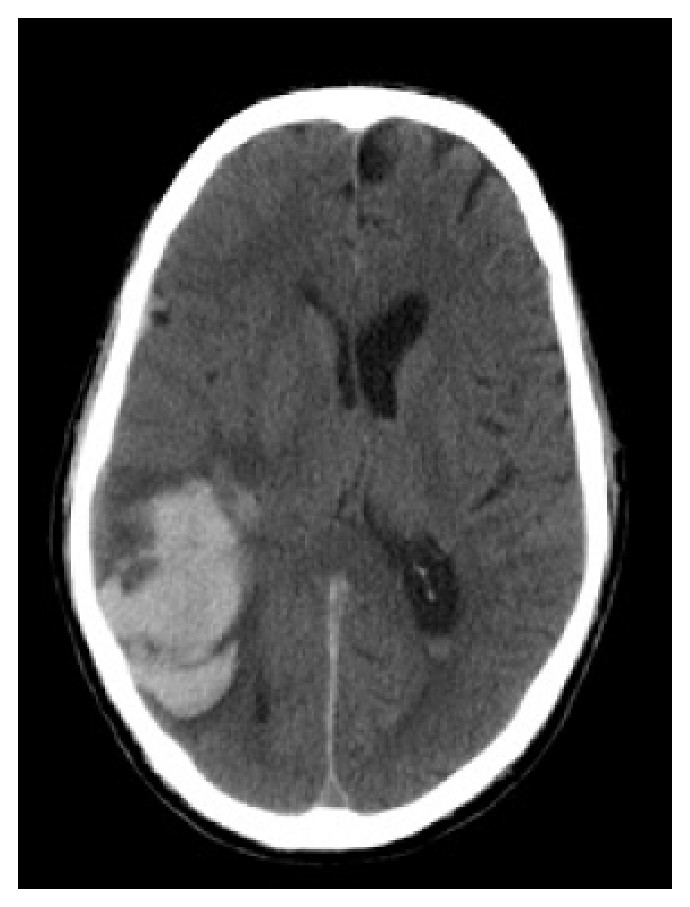
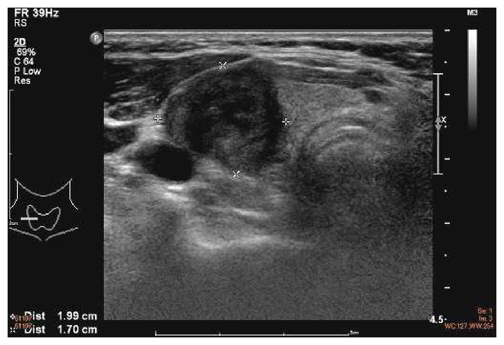
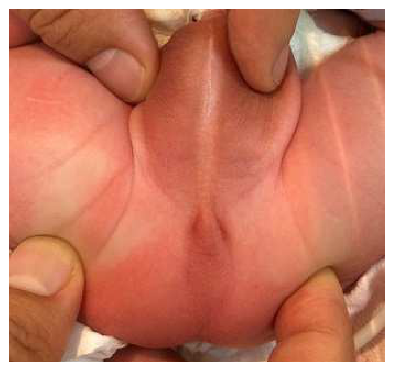
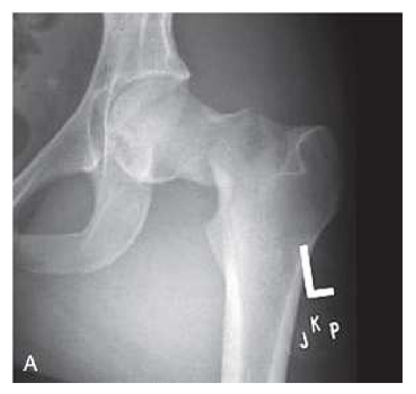
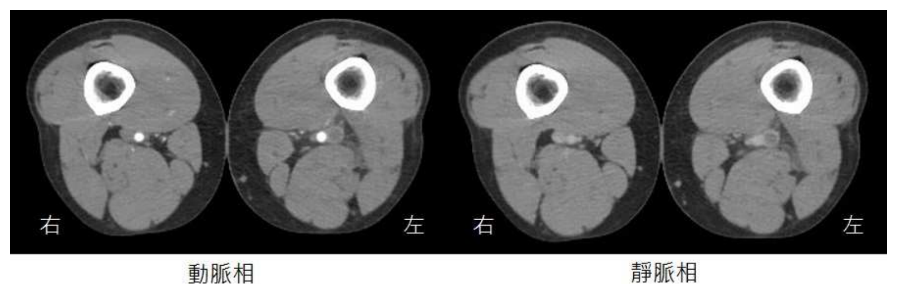

開卷有益 ／
醫師 ／ 醫學（五）（包括外科、骨科、泌尿科等科目及其相關臨床實例與醫學倫理） ／ 111 年第 2 次111 年第 2 次醫師醫學（五）（包括外科、骨科、泌尿科等科目及其相關臨床實例與醫學倫理）試題與答案
這一頁是民國 111 年第 2 次醫師醫學（五）（包括外科、骨科、泌尿科等科目及其相關臨床實例與醫學倫理）的整份歷屆試題，共 80 題，題目與標準答案出自考選部「國家考試試題及測驗式試題答案」開放資料，其中 80 題附有詳解。以下逐題列出題幹、選項與答案；要計時作答或記錄成績，請用線上練習。
考選部原始場次代碼：111080
線上作答這一科 →
全部 80 題
第 1 題
有關行走中跌倒後的病人，若腦部電腦斷層檢查發現顱內出血，下列敘述何者正確？
（A） 右側頭部著地造成顱內出血，通常僅右側的腦部會受傷（B） 硬腦膜上出血常因靜脈血管斷裂造成（C） 與老人相比較，小孩較容易有硬腦膜下出血的情形（D） 若腦部電腦斷層發現出血處在 basal ganglia 或是小腦部位，病人的出血較可能是屬於高血壓造成的出血性腦中風而非車禍造成答案：（D）
詳解與考點 正解：出血位於 basal ganglia 或小腦，這是典型深部穿通動脈病變的部位；相較於外傷撞擊造成的顱內血腫，較支持高血壓性腦內出血，故選 D。
A：頭部外傷除直接撞擊傷外，還可因加速減速造成對撞傷（contrecoup injury），右側著地不代表損傷必只在右側腦部。
B：硬腦膜上出血通常由顱骨骨折撕裂中腦膜動脈所致，是動脈性出血；橋靜脈撕裂較常造成硬腦膜下出血。
C：硬腦膜下出血在老人較常見，因腦萎縮使橋靜脈受牽拉；小孩並非相對較容易發生。
本題考點：外傷性顱內出血（traumatic intracranial hemorrhage）的位置與血管來源；高血壓性腦內出血（hypertensive intracerebral hemorrhage）常見於 basal ganglia、小腦等深部結構。
第 2 題
張力性氣胸（tension pneumothorax）與心包膜積血都可能合併頸靜脈鼓脹，下列何者最能幫助鑑別診斷？
（A） 胸部是否有呼吸聲（B） 肋骨是否有骨折（C） 心音是否清晰（D） 心跳是否加速答案：（A）
詳解與考點 正解：張力性氣胸與心包膜積血都會造成阻塞性休克與頸靜脈鼓脹；兩者最直接的區分在胸部聽診。張力性氣胸患側呼吸音明顯減弱或消失，而心包膜填塞通常不會造成單側呼吸音消失，故選 A。
B：肋骨骨折可伴隨胸部外傷與氣胸，但沒有骨折不能排除張力性氣胸，也不能用來可靠區分心包膜填塞。
C：心音低沉是心包膜填塞的線索，表面上似乎可作鑑別；但心音判讀易受環境與病人狀態影響，呼吸音缺失更能直接辨認張力性氣胸。
D：兩種情況皆可能因休克而心搏過速，缺乏鑑別力。
本題考點：阻塞性休克（obstructive shock）；張力性氣胸（tension pneumothorax）的呼吸音減弱；心包膜填塞（cardiac tamponade）的頸靜脈鼓脹與心音低沉。
第 3 題
有關新興癌症分子生物標靶治療（target therapy）的原理，下列敘述何者錯誤？
（A） 治療 myeloma 可針對 Bcr-Abl 基因（B） 治療 colorectal cancer 可針對 epidermal growth factor receptor（EGFR）（C） 治療 breast cancer 可針對 human epidermal growth factor receptor 2（HER2）（D） 治療 renal cell carcinoma 可針對 vascular endothelial growth factor（VEGF）答案：（A）
詳解與考點 正解：「何者錯誤」。Bcr-Abl 融合基因是慢性骨髓性白血病等血液惡性腫瘤的重要標靶，不是多發性骨髓瘤（myeloma）的典型治療標靶，故錯誤的是 A。
B：轉移性大腸直腸癌在適當分子條件下可使用抗 EGFR 治療；它看似只要有 EGFR 就可用，但仍須考量腫瘤下游基因狀態，原則上是正確的標靶方向。
C：HER2 過度表現的乳癌可採 HER2 導向治療，為乳癌精準治療的代表。
D：腎細胞癌的血管新生與 VEGF 路徑密切相關，VEGF 路徑抑制是常用的治療策略。
本題考點：分子標靶治療（targeted therapy）；Bcr-Abl fusion gene 與慢性骨髓性白血病（chronic myeloid leukemia）；EGFR、HER2 與 VEGF 的腫瘤標靶。
第 4 題
下列何者不是胰臟癌的危險因子？
（A） 抽菸（B） Peutz-Jeghers syndrome（C） 遺傳性胰臟炎（D） 縮胃手術答案：（D）
詳解與考點 正解：胰臟癌危險因子。抽菸、特定遺傳性症候群與遺傳性胰臟炎均會增加風險；縮胃手術本身不是已知的胰臟癌危險因子，故選 D。
A：抽菸是可修正的胰臟癌危險因子，與胰臟癌風險上升相關。
B：Peutz-Jeghers syndrome 屬遺傳性腫瘤易感症候群，會增加胰臟癌風險。
C：遺傳性胰臟炎造成反覆、慢性的胰臟發炎與組織損傷，會提高日後胰臟癌風險。
本題考點：胰臟癌（pancreatic cancer）的危險因子；遺傳性癌症症候群（hereditary cancer syndromes）；慢性胰臟炎（chronic pancreatitis）與惡性腫瘤風險。
第 5 題
高壓氧（hyperbaric oxygen therapy）為一有效改善組織缺氧之療法，應用於傷口組織缺氧治療最主要之先決條件為何？
（A） 病人本身多重合併症需獲得良好控制（B） 確認傷口標的物本身之血液循環暢通（C） 傷口細菌培養不能有感染狀況（D） 傷口縫合必須堅固以防崩裂答案：（B）
詳解與考點 正解：高壓氧可提高血漿溶氧量，但氧必須能隨血流送抵傷口，故此處的「先決條件」是傷口標的物的血液循環暢通，選 B。若主要供血血管阻塞，單靠提高吸入氧分壓不能取代血流重建。
A：控制糖尿病等合併症有助整體傷口癒合，但不是高壓氧能否將氧送到局部的最先決條件。
C：傷口感染需要適當清創、引流與抗感染處置；感染存在不等於完全不能考慮高壓氧。
D：縫合是否堅固與傷口張力相關，不能取代傷口灌流這項組織氧合的基本條件。
本題考點：高壓氧治療（hyperbaric oxygen therapy）；組織灌流（tissue perfusion）；傷口癒合（wound healing）須先確保血流供應。
第 6 題
有關腎臟移植後使用免疫抑制劑的感染副作用，下列敘述何者最不恰當？
（A） 可於術後預防性使用 acyclovir 或 valgancyclovir，以降低術後巨細胞病毒（cytomegalovirus）感染機率（B） 因使用免疫抑制劑導致免疫力低下後所致的多瘤病毒相關性腎病（polyomavirus-associated nephropathy）會導致移植腎功能喪失（C） 長期使用免疫抑制劑會增加病毒活化機會，導致移植後癌症的發生率升高（D） 移植後淋巴增生性病變（posttransplantation lymphoproliferative disorder）的成因，與人類乳突病毒（humanpapillomavirus）活化有關答案：（D）
詳解與考點 正解：移植後淋巴增生性病變的病毒關聯。PTLD 主要與 Epstein-Barr virus（EBV）感染或再活化及免疫抑制有關，不是 human papillomavirus（HPV）活化，故最不恰當的是 D。
A：移植後依風險採用抗病毒預防可降低 cytomegalovirus 感染；實際藥物與療程須依捐受者血清學和移植中心方案決定，但敘述方向正確。
B：BK virus 等多瘤病毒相關腎病可傷害移植腎，嚴重時確可導致移植腎功能失敗。
C：長期免疫抑制降低免疫監視，增加病毒相關與其他惡性腫瘤的發生風險。
本題考點：腎臟移植（kidney transplantation）的感染併發症；移植後淋巴增生性病變（posttransplant lymphoproliferative disorder, PTLD）與 EBV；BK polyomavirus-associated nephropathy。
第 7 題
下列何者是發生胃癌的高風險因素？
（A） 高脂高蛋白的飲食（B） 含氯的飲用水（C） 低社經階層（low socioeconomic class）人士（D） 女性病人答案：（C）
詳解與考點 正解：胃癌的流行病學高風險因子。低社經階層常與 Helicobacter pylori 感染、保存食物暴露及醫療資源差異等風險聚集相關，因此選 C。
A：高脂高蛋白飲食不是胃癌的典型高風險描述；較具代表性的是高鹽、醃漬或煙燻食物等暴露。
B：含氯飲用水不是胃癌的公認主要危險因子，不能與感染或飲食保存方式等證據較強的因素並列。
D：胃癌整體發生率在男性較高，女性不是高風險族群。
本題考點：胃癌（gastric cancer）的危險因子；Helicobacter pylori infection；社會經濟狀態（socioeconomic status）與疾病風險分布。
第 8 題
有關生殖細胞瘤（germinoma）之敘述，下列何者錯誤？
（A） 占 primary CNS tumor 約 1～2 %（B） 90%以上發生於 20 歲前（C） 50%長在 pineal region（D） 在 pineal region 的 germinoma：男女發生比例為 1：1答案：（D）
詳解與考點 正解：pineal region germinoma 的性別分布。松果體區生殖細胞瘤較常見於男性，不是男女 1:1，因此錯誤的是 D。
A：生殖細胞瘤在原發性中樞神經腫瘤中所占比例不高，約 1～2% 的敘述可成立。
B：中樞神經生殖細胞瘤多發於兒童與青少年，絕大多數在 20 歲前發生。
C：松果體區是生殖細胞瘤的常見發生部位，約半數位於此處；松果體區與鞍上區是考試上應優先想到的位置。
本題考點：中樞神經生殖細胞瘤（central nervous system germinoma）；松果體區（pineal region）腫瘤；年齡與性別分布（epidemiology）。
第 9 題
有關兒童腦幹膠質瘤（pediatric brainstem glioma）之敘述，下列何者錯誤？
（A） 占兒童腦瘤比例約 10～20%（B） pontine glioma 的存活率較 midbrain glioma 好（C） tectal gliomas 常以水腦症表現（D） pontine gliomas 常以 multiple cranial nerve palsies 表現答案：（B）
詳解與考點 正解：橋腦與中腦膠質瘤預後比較。瀰漫性 pontine glioma 通常侵襲性高、預後差；相較之下 midbrain glioma 常較局限且預後較佳，因此稱 pontine glioma 存活率較好是錯誤敘述，選 B。
A：兒童腦幹膠質瘤約占兒童腦瘤的一成以上，10～20% 是常用的概略比例。
C：tectal glioma 位於導水管附近，容易阻礙腦脊髓液流通，故常以水腦症表現。
D：pontine glioma 侵犯橋腦的腦神經核與傳導路徑，可出現多發性腦神經麻痺。
本題考點：兒童腦幹膠質瘤（pediatric brainstem glioma）；瀰漫性橋腦膠質瘤（pontine glioma）的預後；tectal glioma 與阻塞性水腦症（obstructive hydrocephalus）。
第 10 題
一位 70 歲男性，於晚飯後劇烈頭痛頭暈及噁心嘔吐，被家人送來急診，電腦斷層檢查結果如圖，下列敘述何者錯誤？

（A） 須立即進行手術移除顱內血塊，否則會有生命危險（B） 可能是動靜脈畸形出血（C） 可能是類澱粉血管病變（amyloid angiopathy）出血（D） 可能是一個轉移性腫瘤出血答案：（A）
詳解與考點 正解：頭部電腦斷層可見右側大腦半球周邊、皮質下的腦內高密度出血，屬葉性腦出血（lobar intracerebral hemorrhage），周圍可見水腫與局部占位效應。腦內出血是否手術，須依血腫位置與體積、意識惡化、顱內壓、腦幹壓迫或腦疝風險及病因綜合判斷；並非所有葉性腦出血都必須立刻開顱移除血塊。因此（A）把手術說成一律立即必要，為錯誤敘述。
B：動靜脈畸形（arteriovenous malformation, AVM）破裂可造成腦內出血，尤其在非典型高血壓性出血的位置時，應進一步以血管影像評估是否有血管病灶；故此項可能性存在，並非錯誤。
C：類澱粉血管病變（cerebral amyloid angiopathy）常見於高齡者，典型表現為皮質或皮質下的葉性出血；本例患者70歲且出血靠近腦表面，符合可考慮的出血原因，故非錯誤。
D：轉移性腫瘤（metastatic tumor）可因腫瘤血管脆弱而出血，影像上可呈現周邊腦內出血及明顯周邊水腫；本圖不能單憑出血排除腫瘤，故仍可能是出血性轉移腫瘤，並非錯誤。
本題考點：腦內出血（intracerebral hemorrhage）的影像判讀；葉性出血（lobar hemorrhage）的病因，包括類澱粉血管病變、血管畸形與腫瘤出血；腦出血手術適應症須個別依臨床與影像風險判定。
第 11 題
下列關於頸椎退化性疾病的治療敘述，何者最不適當？
（A） 急性頸椎神經根病變，通常先以保守治療（包括休息、復健和藥物治療），可以改善大部分症狀（B） 如果病人保守治療後，症狀仍未改善，則須考慮手術治療（C） 以手術治療後，病人肩頸疼痛症狀和神經症狀都能全部改善，可回到原本生活和工作（D） 前位椎間盤切除減壓手術，術後病人可能發生聲音沙啞、喝水容易嗆到、和吞嚥困難的風險答案：（C）
詳解與考點 正解：「最不適當」。頸椎手術可改善選定病人的神經壓迫症狀，但療效受病程、神經損傷與疼痛來源影響，不能保證肩頸痛與神經症狀全部改善並完全恢復原有生活工作，故選 C。
A：急性頸椎神經根病變多可先採休息、藥物與復健等保守治療，許多病人症狀會改善。
B：保守治療無效、症狀持續惡化或有明確神經壓迫時，確應評估手術治療。
D：前位頸椎手術可能牽涉喉返神經、食道周邊組織，聲音沙啞、吞嚥困難與喝水嗆到是應說明的術後風險。
本題考點：頸椎神經根病變（cervical radiculopathy）的保守與手術治療；術後預後（surgical outcome）不可保證；前位頸椎手術（anterior cervical surgery）併發症。
第 12 題
關於 Chiari I herniation 的敘述，下列何者錯誤？
（A） 延髓（medulla）向下疝出，超出 foramen magnum 位置（B） 可能產生四肢麻木、無力情形（C） 可能產生脊髓空洞症（syringomyelia）（D） 可藉由切除枕骨下骨（suboccipital craniectomy）與第一頸椎椎弓來治療答案：（A）
詳解與考點 正解：Chiari I herniation 的解剖構造。Chiari I 是小腦扁桃體（cerebellar tonsils）經 foramen magnum 向下疝出，不是延髓向下疝出，因此錯誤的是 A。
B：小腦扁桃體下疝可造成脊髓或腦幹相關症狀，病人可能出現四肢麻木、無力。
C：Chiari I 可妨礙腦脊髓液流動，與脊髓空洞症（syringomyelia）有關。
D：有症狀或合併腦脊髓液阻塞時，可行枕下減壓合併第一頸椎椎弓切除，以增加顱頸交界處空間。
本題考點：Chiari I malformation；小腦扁桃體下疝（cerebellar tonsillar herniation）；脊髓空洞症（syringomyelia）與後顱窩減壓術（posterior fossa decompression）。
第 13 題
車禍後一個星期，病人發現右眼突出、泛紅、眼睛疼痛、視力減弱，抽血確定無感染，下列敘述何者正確？
（A） 總頸動脈分支處受傷，血栓向遠端移行導致（B） 常因頸椎過度旋轉導致（C） 通常是產生低流速（low flow）的動靜脈瘻管所致（D） 往往不用開刀，而藉由血管介入治療答案：（D）
詳解與考點 正解：車禍後延遲出現單側眼球突出、結膜充血、眼痛與視力下降，且排除感染，應想到創傷性頸動脈海綿竇瘻管（carotid-cavernous fistula）。其常以血管內介入栓塞治療，不一定須開放手術，故選 D。
A：本病是頸動脈與海綿竇間形成異常交通，不是總頸動脈分支血栓向遠端移行所致。
B：頸椎過度旋轉較聯想到椎動脈剝離等血管傷害，不能解釋本題典型的眼眶靜脈鬱血表現。
C：創傷性頸動脈海綿竇瘻管通常是高流速（high-flow）分流；低流速瘻管較符合自發性硬腦膜型病灶。
本題考點：頸動脈海綿竇瘻管（carotid-cavernous fistula）；高流速動靜脈瘻管（high-flow arteriovenous fistula）；血管內治療（endovascular therapy）。
第 14 題
顯微組織皮瓣（microvascular free flaps）移植後的術後照護，下列敘述何者錯誤？
（A） 使用抗凝血藥物肝素（heparin）可減少血管栓塞，因而顯著增加皮瓣存活率，已是常規顯微手術必用藥物（B） 大部分的皮瓣移植後栓塞發生在術後 48 小時內，這段時間內只要及早發現，救回皮瓣（flap salvage）的機會較高（C） 皮瓣是否存活，一般可以觀察其皮膚顏色變化、微血管充盈時間（capillary refilling time）和針刺後血流的顏色來協助判別（D） 血管縫合太鬆導致中膜（tunica media）外露，也是造成術後栓塞的原因答案：（A）
詳解與考點 正解：「常規必用」與「顯著增加存活率」的絕對說法。顯微皮瓣術後抗凝策略需依血栓風險與出血風險個別化，heparin 並非所有顯微手術的必用常規，也不能一概宣稱顯著提高皮瓣存活率，故錯誤的是 A。
B：皮瓣血管栓塞多發生在術後早期，尤其 48 小時內；及早察覺並再探查處理可提高 salvage 機會。
C：臨床可透過皮膚顏色、微血管充盈與針刺出血情形監測皮瓣灌流，協助辨識動脈或靜脈問題。
D：血管吻合不良、內膜或中膜暴露與血流紊亂均可促成血栓，縫合技術是預防栓塞的重要環節。
本題考點：顯微游離皮瓣（microvascular free flap）監測；皮瓣搶救（flap salvage）；術後抗凝（postoperative anticoagulation）須個別化。
第 15 題
有關手部曲屈肌腱損傷（flexor tendon injuries）下列敘述何者正確？①可以劃分為五區 ②第一、二、四區的肌腱有滑膜鞘（synovial sheath）包覆 ③沒有 paratendon 的區域，受傷後癒合速度比較快 ④腕隧道（carpaltunnel）屬於第四區
（A） 僅①④（B） 僅①③④（C） 僅①②④（D） ①②③④答案：（C）
詳解與考點 正解：屈肌腱五區及腱鞘分布。屈肌腱損傷可分五區，第一、二、四區有 synovial sheath，腕隧道屬第四區，所以①②④正確；沒有 paratendon 的區域不會因此癒合較快，③錯誤，故選 C。
A：僅列①④遺漏②；第一、二、四區的肌腱確有滑膜鞘包覆。
B：此組合納入③，但無 paratendon 代表癒合的外在血液供應與滑動環境較不利，不可說癒合較快。
D：①②④雖正確，③錯誤，因此四項全對不成立。
本題考點：屈肌腱分區（flexor tendon zones）；滑膜鞘（synovial sheath）與 paratendon；腕隧道（carpal tunnel）屬第四區。
第 16 題
有關唇顎裂修復手術之時間表，下列何者錯誤？
（A） 出生後 1～2 個月可接受唇黏合術（lip adhesion）（B） 出生後 3～6 個月可接受唇及初步鼻修復術（lip and primary nose repair）（C） 出生後 10～12 個月可接受顎修復術（palate repair）（D） 5 歲前可接受唇或鼻修正術（lip or nose revision）答案：（D）
詳解與考點 正解：唇顎裂治療的生長導向時程。唇與鼻部的修正手術通常須配合臉部生長、齒顎治療與功能狀態評估，將例行唇或鼻修正限定在 5 歲前並不適當，故選 D。這類手術時程會因裂隙型態與團隊方案而異，本題的月份範圍應作原則性理解。
A：在選定的嚴重唇裂個案，可於出生後早期先作 lip adhesion，以利後續正式修復。
B：出生後數月進行唇及初步鼻修復是常見的治療安排。
C：顎修復通常安排在幼兒早期、語言發展前後的時段，10～12 個月的概略安排可成立。
本題考點：唇顎裂（cleft lip and palate）的分期重建；唇修復（lip repair）與顎修復（palate repair）；顱顏生長（craniofacial growth）影響修正手術時機。
第 17 題
20 歲女性，右側臉頰患有先天性微血管畸形（capillary malformation），俗稱葡萄酒色斑（port wine stain），治療上選擇下列何種雷射最為適合？
（A） 銣雅鉻雷射（Nd:YAG laser）（B） 二氧化碳雷射（CO2 laser）（C） 脈衝式染料雷射（pulsed-dye laser）（D） 紅寶石雷射（ruby laser）答案：（C）
詳解與考點 正解：葡萄酒色斑屬淺表微血管畸形。脈衝式染料雷射的波長主要被血紅素吸收，可選擇性破壞異常微血管而盡量保留周邊組織，最適合治療 port wine stain，故選 C。
A：Nd:YAG laser 穿透較深，對較深血管病灶可有角色，但不是典型淺表葡萄酒色斑的首選。
B：CO2 laser 主要作用於水分、偏向汽化切割組織，不能選擇性處理血管色素。
D：ruby laser 主要被黑色素吸收，較常用於色素性病灶，不是血管性葡萄酒色斑的合適選擇。
本題考點：選擇性光熱分解（selective photothermolysis）；脈衝式染料雷射（pulsed-dye laser）；微血管畸形（capillary malformation）。
第 18 題
最容易造成皮膚移植（skin graft）失敗是在那一期？
（A） 浸潤期（imbibition）（B） 黏合期（inosculation）（C） 血管再生期（revascularization）（D） 增生期（proliferation）答案：（B）
詳解與考點 正解：皮膚移植早期最脆弱的血流建立階段。移植物先靠血漿滲出液維持，之後在黏合期與受床微血管建立 inosculation；此時血腫、血清腫、感染或剪力最容易阻斷接合，故最容易失敗的是 B。
A：浸潤期（imbibition）是移植物初期由受床吸收血漿養分的階段，雖也須妥善固定，但題目所問最關鍵的血管接合脆弱期並非此項。
C：血管再生期已有新生血管長入，灌流逐漸建立，較黏合期穩定。
D：增生期是較後段的修復過程，不是皮膚移植最常因血管未接合而失敗的時點。
本題考點：皮膚移植存活（skin graft take）；浸潤期（imbibition）、黏合期（inosculation）與血管再生（revascularization）；血腫與剪力對移植物的影響。
第 19 題
有關乳癌切除後的乳房重建（breast reconstruction），下列敘述何者錯誤？
（A） 每位患者都有重建的權利，醫師應該盡告知義務提供病患選擇（B） 使用義乳乳房重建（implant-based reconstruction）並不會影響腫瘤復發的偵測（C） 為了得到最好結果（best outcome），乳房重建常常需要多步驟的手術（D） 延遲重建（delayed reconstruction）是指乳癌得到控制後再進行重建，經常需要等 2 年答案：（D）
詳解與考點 正解：延遲重建的定義與時機。延遲重建是乳房切除後於適當時點進行重建，須依腫瘤治療、放射治療與病人狀態個別規劃，並非「乳癌控制後經常必須等 2 年」的固定規則，故選 D。重建時機受後續治療安排影響而有不確定性，不能以單一期限概括。
A：病人應獲得乳房重建選項及其風險、效益的完整說明，能依自身需求作選擇。
B：義乳重建後仍可透過臨床檢查與必要影像監測復發；它看似可能遮蔽病灶，但不是因此就會妨礙復發偵測。
C：為達到對稱、乳頭乳暈重建或修正等目標，乳房重建常需分階段完成。
本題考點：乳房重建（breast reconstruction）；立即重建（immediate reconstruction）與延遲重建（delayed reconstruction）；共享決策（shared decision-making）。
第 20 題
有關主動脈瓣置換手術的適應症，下列何者最不適當？
（A） 有症狀的嚴重主動脈瓣狹窄之病人，可進行主動脈瓣置換手術（B） 中度主動脈瓣狹窄（moderate aortic stenosis）合併冠狀動脈阻塞需進行繞道手術之病人，可進行主動脈瓣置換手術（C） 無症狀的嚴重主動脈瓣狹窄合併左心室收縮功能＜50%之病人，可進行主動脈瓣置換手術（D） 為預防猝死，在無症狀的嚴重主動脈瓣狹窄之病人，可進行主動脈瓣置換手術答案：（D）
詳解與考點 正解：「無症狀嚴重主動脈瓣狹窄」不能只為一般性預防猝死就一律置換瓣膜。此族群的介入需依左心室功能、運動測試、病程進展與手術風險等條件選擇，故 D 的籠統敘述最不適當。主動脈瓣置換適應症屬時效敏感的指引議題，實務應依現行心臟團隊評估。
A：有症狀的嚴重主動脈瓣狹窄通常是瓣膜置換的重要適應症。
B：中度主動脈瓣狹窄若已因冠心病須接受冠狀動脈繞道手術，可同時評估瓣膜置換以避免日後再次開胸。
C：無症狀但嚴重狹窄合併左心室收縮功能下降，是應積極評估瓣膜置換的情境。
本題考點：主動脈瓣狹窄（aortic stenosis）；主動脈瓣置換（aortic valve replacement）；無症狀嚴重瓣膜疾病的風險分層（risk stratification）。
第 21 題
關於主動脈瘤（aortic aneurysm），下列敘述何者正確？
（A） 依組織完整性可分為真動脈瘤（true aneurysm）及假性動脈瘤（pseudoaneurysm），定義為 aortic wall tissue 是否完整，兩者的手術適應症是相同的（B） 感染是形成動脈瘤的原因之一，常被稱為 mycotic aneurysm，最常見的感染源為 fungus（C） 不管是 open 或 endovascular repair of thoracoabdominal aneurysm，cerebrospinal fluid drainage 皆有脊髓保護效果（D） 對於直徑 3 公分的主動脈瘤應持續於門診追蹤，若病人無出現新的症狀，應每三個月密集行追蹤影像檢查答案：（C）
詳解與考點 正解：胸腹主動脈瘤修復時的脊髓缺血預防。無論開放手術或血管內修復，腦脊髓液引流可降低腦脊髓液壓、改善脊髓灌流壓，對選定高風險病人有脊髓保護作用，故選 C。
A：真性與假性動脈瘤雖依血管壁完整性區分，但破裂風險、位置、大小與症狀不同，手術適應症不能視為完全相同。
B：mycotic aneurysm 是感染性動脈瘤的傳統名稱，但常見病原是細菌，不是 fungus。
D：直徑 3 cm 的主動脈瘤通常以定期影像追蹤為主，但每 3 個月密集追蹤並非一般無症狀小型動脈瘤的標準頻率；追蹤間隔須依部位與擴張速度調整。
本題考點：主動脈瘤（aortic aneurysm）的真性與假性分類；胸腹主動脈瘤修復（thoracoabdominal aneurysm repair）；腦脊髓液引流（cerebrospinal fluid drainage）與脊髓保護。
第 22 題
有關深層靜脈栓塞（deep vein thrombosis），下列敘述何者錯誤？
（A） 危險因子包括年齡、惡性腫瘤、先前手術及靜脈栓塞病史（B） Virchow's triad 可解釋靜脈栓塞的可能成因（C） protein C、protein S 及 antithrombin III 的缺少也是常見成因（D） May-Thurner syndrome 常為靜脈血栓的併發症答案：（D）
詳解與考點 正解：May-Thurner syndrome 與靜脈血栓的因果關係。此症候群是右髂動脈壓迫左髂總靜脈所造成的解剖性靜脈回流受阻，會提高左下肢深層靜脈栓塞風險，是血栓的危險因子或成因，而不是深層靜脈栓塞造成的併發症，故選 D。
A：年齡增加、惡性腫瘤、近期手術及既往靜脈血栓栓塞病史都會提高靜脈栓塞風險，敘述正確，故不是本題的錯誤選項。
B：Virchow's triad 包括血流鬱滯、血管內皮損傷及高凝血狀態，可系統性解釋靜脈血栓形成的成因，敘述正確。
C：protein C、protein S 與 antithrombin III 缺乏雖屬較少見的天然抗凝缺陷，卻是公認的遺傳性高凝血狀態與深層靜脈栓塞成因。題目的「常見」宜理解為教科書常列的成因，不能據此推為人群中最常見的 DVT 病因。
本題考點：深層靜脈栓塞（deep vein thrombosis, DVT）的 Virchow's triad；May-Thurner syndrome 是髂靜脈受壓造成靜脈鬱滯的危險因子；天然抗凝蛋白缺乏（protein C、protein S、antithrombin）會增加血栓傾向。
第 23 題
有關主動脈瓣或二尖瓣狹窄之敘述，下列何者錯誤？
（A） 主動脈瓣開口小於 1 cm2，且走路會喘，可建議置換（B） 二尖瓣開口小於 1.5 cm2，使用二尖瓣氣球擴張成效不佳，應該建議置換（C） 現在對主動脈瓣及二尖瓣狹窄皆有成熟且經核准之經導管置換瓣膜技術，以減少手術風險（D） 主動脈瓣狹窄比二尖瓣狹窄惡化進展快，猝死死亡率也高答案：（C）
詳解與考點 正解：把主動脈瓣與二尖瓣狹窄的經導管瓣膜治療混為同等成熟的技術。經導管主動脈瓣置換術（transcatheter aortic valve replacement, TAVR）已有成熟應用；但二尖瓣的解剖、病因及介入方式更複雜，不能概括為和主動脈瓣一樣已有成熟、普遍核准的經導管「置換」技術。此類介入技術與適應症持續演進，故本題依其判準選 C。
A：症狀性嚴重主動脈瓣狹窄是考慮瓣膜置換的重要情境；瓣膜開口面積小於 1 cm2 合併活動喘，符合嚴重且有症狀的臨床線索。
B：二尖瓣狹窄若已達顯著狹窄，且不適合或二尖瓣氣球擴張術成效不佳，會評估外科瓣膜手術，敘述方向正確。
D：主動脈瓣狹窄一旦出現症狀，臨床惡化與猝死風險均具重要性；相較於常呈較長期病程的二尖瓣狹窄，此選項是在強調其較急迫的自然病程與猝死風險，並非本題錯誤所在。
本題考點：主動脈瓣狹窄（aortic stenosis）的症狀性重症需評估瓣膜置換；二尖瓣狹窄（mitral stenosis）的氣球擴張與外科治療選擇；經導管瓣膜介入（transcatheter valve intervention）的技術成熟度須依瓣膜位置區分。
第 24 題
50 歲男性，因喘及腳腫兩個月入院，心臟超音波檢查有左心房右心房擴大，左心功能55%，中心靜脈壓為 22mmHg，肺壓為 40/20 mmHg，導管壓力曲線有“square-root sign”，且電腦斷層顯示其心包膜厚度有 5 mm，下列何者為最可能之診斷？
（A） 右心衰竭，併左心衰竭（B） 縮窄性心包膜炎（constrictive pericarditis）（C） 限縮性心肌病變（restrictive cardiomyopathy）（D） 肥厚性心肌病變（hypertrophic cardiomyopathy）答案：（B）
詳解與考點 正解：導管壓力曲線的 square-root sign 合併心包膜增厚。左、右心房擴大與中心靜脈壓升高表示舒張期充盈受限；square-root sign 代表心室早期快速充盈後突然受僵硬心包膜限制，而電腦斷層顯示心包膜厚 5 mm 進一步支持縮窄性心包膜炎，故選 B。
A：右心衰竭可解釋腳腫與中心靜脈壓升高，但無法單獨說明典型的 square-root sign 與心包膜增厚；它較像血流動力學表現，不是最能統整病因的診斷。
C：限縮性心肌病變也會造成舒張功能障礙，因而是強誘答；但其病灶在心肌而非增厚心包膜，本題的心包膜影像與典型壓力曲線更支持縮窄性心包膜炎。
D：肥厚性心肌病變以心肌肥厚及可能的左心室流出道阻塞為特徵，與雙心房擴大、心包膜增厚及 square-root sign 的組合不符。
本題考點：縮窄性心包膜炎（constrictive pericarditis）造成舒張期充盈受限；square-root sign 是心導管檢查的典型線索；限縮性心肌病變（restrictive cardiomyopathy）須以心包膜影像與血流動力學鑑別。
第 25 題
當診斷出食道破裂，下列處理原則何者最不適當？
（A） 清除致污物（contamination）（B） 廣泛引流，控制感染源頭（C） 延遲性發現之食道破裂，仍應先修補食道破裂處，比置放引流管重要（D） 早期腸道灌食，營養補充答案：（C）
詳解與考點 正解：「延遲性發現」的食道破裂。處置優先是復甦、廣效抗感染、控制縱隔與胸腔污染、充分引流及營養支持；延遲診斷時局部組織常已發炎脆弱，是否可直接修補須視污染程度、組織狀態與病人情況決定，不能一律說先修補比引流重要，故選 C。
A：食道內容物外漏會造成縱隔炎與胸腔污染，清除污染物是感染源控制的一環，屬適當原則。
B：充分引流可排除膿液與持續滲漏，並控制感染源頭，是食道破裂治療的重要措施。
D：早期建立合適的腸道營養途徑有助於傷口癒合與全身恢復；在無法安全經口進食時，營養支持尤其重要。
本題考點：食道破裂（esophageal perforation）的感染源控制；延遲診斷時的引流與個別化手術策略；腸道營養（enteral nutrition）在重症外科照護的角色。
第 26 題
關於巴瑞特氏食道炎（Barrett esophagus），下列敘述何者正確？
（A） 主要是因胃食道逆流，使得鱗狀上皮細胞往胃內生長產生之病變（B） 比一般人多 40 倍罹患食道鱗狀上皮細胞癌機會（C） 反覆發生巴瑞特氏食道炎的病人，經長時間藥物治療無效，可考慮實施胃之抗逆流手術，改善症狀（D） 沒有阻塞吞嚥困難（dysphagia）之症狀答案：（C）
詳解與考點 正解：Barrett 食道源自慢性胃食道逆流，治療目標在控制逆流及處理其併發症。若病人症狀反覆且藥物控制不佳，經適當評估後可考慮抗逆流手術，以改善逆流症狀，故選 C。
A：Barrett 食道是遠端食道的鱗狀上皮被腸型柱狀上皮取代，屬化生（metaplasia），不是鱗狀上皮往胃內生長。
B：Barrett 食道主要增加食道腺癌（esophageal adenocarcinoma）的風險，而非食道鱗狀細胞癌；將癌別對調是看似合理但關鍵錯置的誘答。
D：Barrett 食道本身可無症狀，常表現為胃食道逆流症狀；吞嚥困難並非診斷所需條件，出現時反而須評估狹窄或腫瘤等併發症，因此不能以「沒有」吞嚥困難作為一般性敘述。
本題考點：Barrett 食道（Barrett esophagus）是胃食道逆流相關的腸化生；其惡性風險以食道腺癌（esophageal adenocarcinoma）為主；抗逆流治療（anti-reflux therapy）須依症狀與併發症評估。
第 27 題
肺腺癌原位癌（adenocarcinoma in situ）之病理診斷為下列何種型態？
（A） 腺泡型（acinar）（B） 伏壁型（lepidic）（C） 固體型（solid）（D） 乳頭型（papillary）答案：（B）
詳解與考點 正解：「腺癌原位癌」代表腫瘤細胞沿既有肺泡結構生長，且沒有間質、血管或胸膜侵犯。這種沿肺泡壁生長的型態稱為伏壁型（lepidic pattern），故選 B。
A：腺泡型（acinar）是侵襲性肺腺癌可見的組織型態，具有腺體形成，並非原位腺癌的定義性型態。
C：固體型（solid）通常代表缺乏明顯腺體結構的侵襲性生長型態，與原位癌的純 lepidic 生長不符。
D：乳頭型（papillary）有纖維血管軸心的乳頭結構，屬侵襲性肺腺癌型態之一，不是腺癌原位癌的典型病理診斷。
本題考點：肺腺癌原位癌（adenocarcinoma in situ, AIS）為非侵襲性病灶；伏壁型生長（lepidic growth）是腫瘤細胞沿既有肺泡壁排列；侵襲性肺腺癌須與 acinar、papillary、solid 等型態區分。
第 28 題
有關腺樣囊狀癌（adenoid cystic carcinoma）之敘述，下列何者正確？
（A） 生長緩慢（B） 大部分不會影響氣管（trachea）（C） 很少發生喘鳴（stridor）（D） 大多數病患診斷時已有遠端轉移，因此治療以化學治療為主答案：（A）
詳解與考點 正解：腺樣囊狀癌的自然病程。腺樣囊狀癌通常生長緩慢，但具局部侵犯與晚期遠端轉移的傾向；因此「生長緩慢」是正確敘述，故選 A。
B：腺樣囊狀癌可發生於氣管及支氣管腺體，氣管正是重要發生部位之一，不能說大部分不影響氣管。
C：氣管受侵犯或腔內腫瘤逐漸造成氣道狹窄時，可出現喘鳴（stridor）或被誤認為氣喘；「很少發生」忽略了其常見的氣道阻塞表現。
D：此腫瘤雖可能晚期遠端轉移，但多數病人並非一開始即以廣泛轉移表現；可切除的局部病灶仍以手術為主，不能概括為化學治療為主。
本題考點：腺樣囊狀癌（adenoid cystic carcinoma）的緩慢生長與局部侵犯；氣管腫瘤（tracheal tumor）可造成喘鳴；可切除腫瘤的局部治療以手術為核心。
第 29 題
關於頸部及胸部外傷，下列敘述何者正確？
（A） 頸部穿刺傷常傷及氣管，食道在其後側不易受傷，故不需檢查（B） 若發生胸部穿刺傷，穿刺物留在胸壁層，要先移除後再送醫院處理（C） 若發生胸部鈍傷無外表瘀青挫傷跡象，則無氣血胸的可能（D） 若有皮下氣腫及縱隔腔氣腫則要考慮食道或氣管受傷答案：（D）
詳解與考點 正解：皮下氣腫合併縱隔腔氣腫，表示空氣可能自氣道或食道外漏。頸胸外傷出現這組線索時，須考慮氣管、支氣管或食道受傷並進一步評估，故選 D。
A：頸部穿刺傷可同時傷及氣管、食道與大血管；食道位於後方不表示安全，仍須依傷道與臨床線索檢查。
B：胸部穿刺傷的異物若仍留在原位，可能暫時形成填塞；現場任意拔除可能造成失控出血或氣胸惡化，應固定後送醫處理。
C：胸部鈍傷即使外觀沒有瘀青或挫傷，仍可能有肋骨骨折、肺挫傷、氣胸或血胸；外表正常是看似令人放心卻不能排除胸腔傷害的誘答。
本題考點：頸胸外傷（neck and thoracic trauma）的氣道與食道損傷；皮下氣腫（subcutaneous emphysema）與縱隔腔氣腫（pneumomediastinum）是空氣外漏警訊；穿刺異物應避免現場移除。
第 30 題
下列有關 primary mediastinal cyst，何者錯誤？
（A） 多半沒有症狀（B） Bronchogenic cyst 最為常見，常和支氣管相互連通（C） Pericardial cyst 易發生於右側 cardiophrenic angle（D） Enteric cyst 通常生長於食道旁答案：（B）
詳解與考點 正解：bronchogenic cyst 的解剖特性。支氣管源性囊腫源於原始前腸與氣管支氣管樹的發育異常，通常是封閉的囊腫，並不常與支氣管腔相通；故選項「常和支氣管相互連通」錯誤，故選 B。
A：原發性縱隔囊腫（primary mediastinal cyst）多在影像檢查偶然發現，許多病人沒有症狀，敘述正確。
C：心包囊腫（pericardial cyst）典型位置在右側心膈角（right cardiophrenic angle），敘述正確。
D：腸源性囊腫（enteric cyst）常位於後縱隔、鄰近食道，與前腸發育來源相符，敘述正確。
本題考點：原發性縱隔囊腫（primary mediastinal cyst）的常見無症狀表現；支氣管源性囊腫（bronchogenic cyst）通常不與支氣管相通；心包囊腫與腸源性囊腫的典型縱隔位置。
第 31 題
脾臟（spleen）可視為人類最大的淋巴器官，具有調節免疫系統的功能，下列對於脾臟切除（splenectomy）的敘述何者錯誤？
（A） 嚴重肝硬化的病患經常合併血小板減少（thrombocytopenia），必須切除脾臟以提升血小板數目改善病患預後（B） 外傷及手術當中醫源性的脾臟損傷是脾臟切除最常見的原因（C） 脾臟切除後有較高風險遭受莢膜形細菌感染，如肺炎鏈球菌（Streptococcus pneumoniae）（D） 兒童脾臟切除之後併發猛爆型感染症（overwhelming postsplenectomy infection）的風險比成人高答案：（A）
詳解與考點 正解：嚴重肝硬化合併血小板減少是否「必須」切脾。肝硬化的血小板減少常與門脈高壓、脾腫大及脾功能亢進有關，但脾臟切除有出血、血栓與感染等風險，並非所有病人都必須切除以改善預後，故選 A。
B：外傷性脾損傷與手術中的醫源性損傷是脾切除的重要且常見原因，敘述正確。
C：脾臟對清除莢膜細菌十分重要，脾切除後較易遭肺炎鏈球菌（Streptococcus pneumoniae）等莢膜形細菌侵襲，敘述正確。
D：兒童脾切除後發生猛爆型脾切除後感染症（overwhelming postsplenectomy infection, OPSI）的風險高於成人，故更須重視預防措施，敘述正確。
本題考點：脾功能亢進（hypersplenism）與肝硬化相關血小板減少；脾切除（splenectomy）的適應症須權衡風險；猛爆型脾切除後感染症（OPSI）與莢膜細菌感染。
第 32 題
短腸症（short bowel syndrome）為大量切除小腸之後的長期併發症。下列何者不是短腸症發生的危險因子（riskfactors）？
（A） 空腸切除（jejunal resection）200 公分（B） 未保留迴盲瓣（ileocecal valve）（C） 合併全結腸切除（total colectomy）（D） 克隆氏症（Crohn's disease）答案：（A）
詳解與考點 正解：短腸症的風險取決於剩餘小腸的長度與功能部位，而不只是切除長度。空腸有較強的適應能力，單獨空腸切除 200 公分若仍保留足夠迴腸與結腸，未必是短腸症的典型危險因子；相較之下，失去迴盲瓣、結腸或因克隆氏症持續影響腸道功能更會增加風險，故選 A。
B：迴盲瓣可延緩腸道通過時間並減少結腸菌逆流，未保留時會使吸收與適應較差，為短腸症的危險因子。
C：結腸可回收水分與電解質，並吸收腸菌發酵產生的短鏈脂肪酸；合併全結腸切除會加重腸液流失與營養吸收困難。
D：克隆氏症可能導致多次腸切除、活動性腸炎或殘餘腸道吸收不良，因此會增加短腸症風險。
本題考點：短腸症（short bowel syndrome）的剩餘腸長度與腸段功能；迴盲瓣（ileocecal valve）與結腸保留可改善吸收適應；克隆氏症（Crohn's disease）可能造成反覆腸切除。
第 33 題
關於肝臟小葉（lobule）的敘述，下列何者正確？
（A） 每一個功能單位由 8～12 個終端肝門三合體（portal triad）圍繞一中央小靜脈構成（B） 肝臟小葉中可分成 3 帶，其中 zone 1 因為較缺乏養分與氧氣，容易因為毒素或缺血而產生壞死（C） 肝竇狀隙（sinusoid）的內皮細胞與肝細胞間的間隙稱為 space of Disse，肝細胞藉由擴散作用交換物質，並不產生微絨毛（microvilli）構造（D） 肝臟星狀細胞（stellate cells）又稱 Ito cells，存在於 space of Disse，主要功能之一為儲存維生素Ａ答案：（D）
詳解與考點 正解：肝星狀細胞的位置與功能。肝星狀細胞又稱 Ito cells，位於肝竇內皮與肝細胞之間的 Disse 腔（space of Disse），重要功能包括儲存維生素 A，故選 D。
A：典型肝小葉（hepatic lobule）呈六角形，中央有中央靜脈，周邊通常由多個而非 8～12 個門管區構成；數目敘述不正確。
B：zone 1 最接近門管區，最先獲得氧氣與養分；最易因缺氧而受損的是靠近中央靜脈的 zone 3，故選項將分區特性顛倒。
C：肝細胞朝向 Disse 腔的一側具有微絨毛（microvilli），以增加與血漿成分交換的表面積；「不產生微絨毛」錯誤。
本題考點：肝小葉（hepatic lobule）的門管區與中央靜脈；肝腺泡分區（hepatic acinus zone）中 zone 3 易缺血；肝星狀細胞（hepatic stellate cell, Ito cell）位於 Disse 腔並儲存維生素 A。
第 34 題
關於肝臟分葉，下列敘述何者最恰當？
（A） 從鐮狀韌帶（falciform ligament）分界（B） 尾葉（caudate lobe）屬右肝（C） 肝部（sector）以肝動脈走向為界（D） 所謂 Cantlie's line，係指膽囊窩至下腔靜脈的連線答案：（D）
詳解與考點 正解：功能性肝臟分葉的界線。Cantlie's line 是由膽囊窩連至下腔靜脈的假想線，對應中肝靜脈附近的平面，用以區分功能性右、左肝，故選 D。
A：鐮狀韌帶主要是表面解剖分界，不能準確代表肝內血管與膽道分布的功能性右、左肝界線。
B：尾葉（caudate lobe）具有相對獨立的血流與膽道解剖，不能單純歸入右肝；這是把表面位置當作功能分葉的強誘答。
C：肝部（sector）的功能性劃分主要依門靜脈分支及肝靜脈引流平面，而非只以肝動脈走向為界。
本題考點：功能性肝臟分葉（functional hepatic segmentation）；Cantlie's line 由膽囊窩至下腔靜脈；肝臟分段與門靜脈、肝靜脈及膽道解剖的關係。
第 35 題
有關小腸腫瘤，下列敘述何者最恰當？
（A） 良性腫瘤最常見為脂肪瘤，通常無症狀（B） 最常見的惡性腫瘤為腺癌，好發於迴腸（C） 類癌（carcinoid）易合併類癌症後群（carcinoid syndrome），若能手術切除治療，應儘量切除完全（D） 基質瘤（gastrointestinal stromal tumor）的預後，主要視癌細胞分裂情況而定，與腫瘤大小無關答案：（C）
詳解與考點 正解：小腸類癌相較其他部位的神經內分泌腫瘤較容易出現類癌症候群（carcinoid syndrome），但整體並非多數，典型上多在已有肝轉移時發生。若腫瘤可手術切除，仍應盡可能完整切除原發病灶及可切除病灶，故選 C。
A：小腸良性腫瘤的常見種類並非可一概而論為脂肪瘤最常見，且不同腫瘤與部位的盛行率不同；此敘述過度絕對，非最恰當。
B：小腸惡性腫瘤的組成依資料來源與腸段不同而異；腺癌較常見於十二指腸及近端空腸，說「最常見且好發迴腸」將腫瘤分布過度簡化。
D：胃腸道基質瘤（gastrointestinal stromal tumor, GIST）的預後與風險評估同時考量腫瘤大小、分裂率及位置，不能說與腫瘤大小無關。
本題考點：小腸類癌（small bowel carcinoid tumor）的手術原則；類癌症候群（carcinoid syndrome）與腫瘤分泌物；GIST 風險分層須整合腫瘤大小與有絲分裂率（mitotic rate）。
第 36 題
下列有關胃惡性腫瘤的敘述，何者錯誤？
（A） 為求正確 TNM 分期，胃癌手術中至少需取出 16 顆淋巴結（B） AJCC 在西元 1997 年，將胃癌的 TNM 分期系統中的 N 分期由淋巴結轉移的位置改為淋巴結轉移數目決定（C） 3 公分的胃底（gastric fundus）基質瘤（gastrointestinal stromal tumor, GIST）的標準治療是胃局部切除加上淋巴結廓清術（D） 胃的 low-grade MALT（mucosa-associated lymphoid tissue）lymphoma 可用根除幽門螺旋桿菌來治療，約 75%病人可達到緩解（remission）答案：（C）
詳解與考點 正解：胃部 GIST 的淋巴結轉移型態。GIST 主要經血行或腹膜播散，區域淋巴結轉移罕見，因此局部切除時通常不需常規淋巴結廓清；把胃局部切除加淋巴結廓清列為 3 cm 胃底 GIST 的標準治療錯誤，故選 C。
A：胃癌的病理分期須有足夠淋巴結檢體，至少取 16 顆淋巴結是常用的充分分期門檻，敘述正確。
B：胃癌 TNM 的區域淋巴結分期已由依解剖位置分類轉向以轉移淋巴結數目分類，敘述正確。
D：低惡性度胃 MALT 淋巴瘤與幽門螺旋桿菌（Helicobacter pylori）感染密切相關，根除治療可使相當部分病人緩解，敘述正確。
本題考點：胃腸道基質瘤（GIST）以完整局部切除為主且通常不做常規淋巴結廓清；胃癌 TNM 分期（TNM staging）的淋巴結取樣；胃 MALT 淋巴瘤（MALT lymphoma）與 Helicobacter pylori 根除治療。
第 37 題
65 歲女性因急性上腹痛及背痛至急診室就醫，經初步檢查可能診斷為膽結石引起急性胰臟炎，實習醫學生想用 Ranson prognostic criteria 評估嚴重度，下列何者不是評估的項目？
（A） age（B） blood glucose level（C） total bilirubin level（D） white blood cell count答案：（C）
詳解與考點 正解：Ranson prognostic criteria 評估急性胰臟炎時，採用的是特定的入院與 48 小時內生理、生化指標。入院時項目包括年齡、白血球數及血糖等；total bilirubin level 並非 Ranson criteria 的評估項目，故選 C。
A：年齡是 Ranson criteria 的入院評估項目之一，膽結石性與非膽結石性胰臟炎的門檻細節不同，但都會納入年齡。
B：blood glucose level 是 Ranson criteria 的入院評估項目之一，反映嚴重急性胰臟炎的代謝壓力。
D：white blood cell count 是 Ranson criteria 的入院評估項目之一，可反映全身發炎反應。
本題考點：Ranson prognostic criteria 用於急性胰臟炎（acute pancreatitis）嚴重度評估；入院項目包括年齡、白血球數與血糖；膽紅素（total bilirubin）雖可協助膽道病因評估，並非此評分項目。
第 38 題
病態性肥胖病患接受胃繞道手術（Roux-en-Y gastric bypass），手術後正餐進食 20 至 30 分鐘後，會有胃脹、嘔吐且伴隨有頭暈、心悸與冒汗等症狀。依前述，下列何者正確？
（A） 此症狀需進行迷走神經切除手術（truncal vagotomy）矯正（B） 此症狀可藉由調整飲食習慣來改善（C） 此症狀大部分需要藥物治療如 Sandostatin（octreotide）以有效改善症狀（D） 此症狀大部分需要手術治療，以減緩胃排空速率答案：（B）
詳解與考點 正解：胃繞道後餐後 20 至 30 分鐘出現腹脹、嘔吐、頭暈、心悸與冒汗，符合早期傾食症候群（early dumping syndrome）。高滲食物快速進入小腸造成腸腔液體移入及腸道血管活性反應，第一線處理是少量多餐、減少高糖食物並調整進食與飲水習慣，故選 B。
A：迷走神經切除術（truncal vagotomy）會改變胃排空，並非傾食症候群的矯正方法，反而可能加重胃排空問題。
C：octreotide 可用於少數飲食調整仍嚴重的個案，但大部分病人可先靠飲食與生活調整改善，不能說大部分需要藥物。
D：手術修正僅保留給嚴重且保守治療無效的少數病人；症狀雖可能令人不適，但不能因此推論大部分需手術。
本題考點：早期傾食症候群（early dumping syndrome）發生於餐後不久；Roux-en-Y gastric bypass 後的營養與飲食調整；octreotide 與手術治療屬難治個案的選項。
第 39 題
一位 55 歲女性罹患高血壓多年，經 saline loading test 確診為原發性多醛酮症（primary hyperaldosteronism），為了排除是 bilateral adrenal hyperplasia，下列定位檢查何者較不適當？
（A） thin-cut adrenal computed tomography（CT）scan（B） 131I-6β-iodomethyl noriodocholesterolscintigraphy（NP-59）（C） selective adrenal vein sampling（D） metaiodobenzylguanidine（MIBG）scan答案：（D）
詳解與考點 正解：原發性多醛酮症需區分單側醛固酮分泌與雙側腎上腺增生。MIBG scan 主要用於嗜鉻細胞瘤等嗜鉻細胞相關腫瘤的定位，不能用來判定原發性多醛酮症是否為雙側腎上腺增生，故選 D。
A：薄層腎上腺電腦斷層（thin-cut adrenal CT）可評估腺瘤、結節或其他腎上腺結構異常，雖不能單獨決定側別，仍是適當的初步定位檢查。
B：NP-59 腎上腺皮質顯影可反映腎上腺皮質功能分布，屬可協助定位的功能性檢查。
C：選擇性腎上腺靜脈採樣（selective adrenal vein sampling）可比較雙側醛固酮分泌，是區分單側與雙側病變的重要檢查，敘述正確。
本題考點：原發性多醛酮症（primary hyperaldosteronism）的分型；腎上腺靜脈採樣（adrenal vein sampling）用於側別判定；MIBG scan 主要用於嗜鉻細胞瘤（pheochromocytoma）相關評估。
第 40 題
一位 60 歲男性有腎結石病史，近日因聲音沙啞就醫，理學檢查發現頸部有一腫塊，抽血發現血鈣高達 14.5mg/dL 及 parathyroid hormone （PTH）525 pg/mL，最有可能的診斷為？
（A） sarcoidosis（B） parathyroid cancer（C） secondary hyperparathyroidism（D） parathyromatosis答案：（B）
詳解與考點 正解：明顯高血鈣、高 PTH、可觸及頸部腫塊及聲音沙啞的組合。腎結石支持長期高血鈣；血鈣 14.5 mg/dL 與 PTH 525 pg/mL 顯著升高，再合併頸部腫塊及可能喉返神經受影響的聲音沙啞，最應懷疑副甲狀腺癌（parathyroid cancer），故選 B。
A：sarcoidosis 可因肉芽腫增加活性維生素 D 造成高血鈣，但此時 PTH 應受抑制，不會出現高度 PTH 升高與頸部腫塊的組合。
C：續發性副甲狀腺功能亢進常由慢性腎臟病或維生素 D 缺乏引起，典型為低鈣或正常鈣刺激 PTH 上升，與本題嚴重高血鈣不符。
D：parathyromatosis 是副甲狀腺組織散布植入造成的罕見狀態，常與既往副甲狀腺手術相關；題目沒有此病史，且腫塊、聲音沙啞與嚴重生化異常更指向惡性病灶。
本題考點：副甲狀腺癌（parathyroid cancer）的高血鈣與高度 PTH；高血鈣（hypercalcemia）的 PTH 依賴性與非依賴性鑑別；喉返神經受侵犯可造成聲音沙啞。
第 41 題
一位 65 歲男性發現右頸部有一硬塊，頸部超音波檢查如附圖，細針穿刺細胞學檢查顯示為甲狀腺乳突癌（papillary thyroid cancer），根據超音波圖像，此甲狀腺癌可能合併下列何者特性？

（A） lateral neck lymph node metastasis（B） extrathyroidal extension（C） tracheal invasion（D） esophageal invasion答案：（B）
詳解與考點 正解：超音波可見甲狀腺內約 1.89 × 1.70 cm 的低回音結節，結節貼近甲狀腺後外側被膜，該處正常平整的甲狀腺輪廓不清且呈向外突出的關係。乳突癌若在超音波上出現腫瘤與被膜緊密接觸、被膜中斷或輪廓外凸，須懷疑甲狀腺外侵犯（extrathyroidal extension），故選 B。
A：側頸淋巴結轉移（lateral neck lymph node metastasis）應由側頸淋巴結本身的異常形態判讀，例如圓形、失去脂肪門、囊性變化或微鈣化；圖中量測與標示的是甲狀腺結節，並非側頸淋巴結，不能據此判定側頸轉移。
C：氣管侵犯（tracheal invasion）須見腫瘤與氣管壁的介面消失、氣管軟骨或管腔受侵犯等直接徵象。此圖未顯示結節延伸至氣管壁或造成氣管管腔侵犯，不能由被膜鄰近推論為氣管侵犯。
D：食道侵犯（esophageal invasion）通常需顯示後方食道層次遭腫瘤破壞或腫瘤直接延伸至食道壁；本圖僅支持結節與甲狀腺被膜界面異常，沒有食道壁受侵犯的影像依據。
本題考點：甲狀腺超音波（thyroid ultrasonography）中，腫瘤與被膜接觸、輪廓外凸或被膜界面中斷提示甲狀腺外侵犯（extrathyroidal extension）；淋巴結、氣管與食道侵犯則需各自具備相應的直接影像徵象。
第 42 題
下列有關乳房病變之敘述，何者錯誤？
（A） 乳房影像檢查沒看到腫瘤，但單側腋下淋巴有癌轉移要先排除乳癌的可能性（B） 乳房皮膚有橘子皮變化和 Cooper's ligament invasion 有關（C） 乳頭有濕疹性變化要排除 Paget's disease 的可能性（D） 乳癌觸診摸到硬的腫塊是因 desmoplastic reaction答案：（B）
詳解與考點 正解：乳房橘子皮（peau d'orange）改變的機轉。橘子皮是腫瘤阻塞皮膚淋巴管造成皮膚水腫，毛囊與汗腺開口被牽拉而形成凹凸外觀；Cooper 韌帶受侵犯較會造成皮膚凹陷或乳房牽縮，兩者機轉不同，因此選項 B 錯誤，故選 B。
A：乳房影像未見明顯腫塊但有單側腋下淋巴結癌轉移時，仍須排除隱匿性乳癌（occult breast cancer），敘述正確。
C：乳頭或乳暈濕疹樣變化須考慮 Paget disease，因其可表現為乳頭皮膚的慢性病灶，敘述正確。
D：乳癌常因腫瘤周圍纖維化反應（desmoplastic reaction）而觸診較硬，敘述正確。
本題考點：橘子皮（peau d'orange）源於皮膚淋巴管阻塞；Cooper 韌帶（Cooper's ligament）受牽拉造成皮膚凹陷；乳房 Paget disease 與隱匿性乳癌（occult breast cancer）的臨床警訊。
第 43 題
關於乳癌之術後放射線治療，下列敘述何者最不適當？
（A） 乳管原位癌（DCIS）之病患行乳房保留手術後，建議接受全乳放射線治療，可減少 50%的癌症復發率（B） 侵襲性乳癌病人若接受乳房保留手術則需放射線治療，但若病患年齡大於 70 歲、腫瘤≦T1、ER+且淋巴結無移轉，仍可考慮免除放射線治療（C） 侵襲性乳癌病人若接受全乳切除手術則通常不需放射線治療，但淋巴結轉移較多顆或腫瘤大小超過 5 公分者仍需考慮（D） 接受乳房保留手術之侵襲性乳癌，若病患年齡小於 60 歲，可以化學治療取代放射線治療答案：（D）
詳解與考點 正解：侵襲性乳癌接受乳房保留手術後的局部治療。保留乳房後，放射線治療是降低同側乳房局部復發的重要部分；年齡小於 60 歲並不能以化學治療取代局部放射線治療。化學治療處理全身性微轉移風險，兩者目的不同，故最不適當的是 D。
A：乳管原位癌（DCIS）接受乳房保留手術後加做全乳放射線治療，可明顯降低局部復發風險；此處看似只是原位病變而可免治療，但保留乳房後仍有殘餘乳房組織的局部復發風險，故非最不適當。
B：侵襲性乳癌通常在乳房保留手術後合併放射線治療；高齡、低腫瘤負荷、ER 陽性且淋巴結陰性的特定低風險病人，可個別評估省略放射線治療，敘述方向正確。
C：全乳切除後不一定常規照射，但腫瘤較大或腋下淋巴結轉移負荷較高時，局部區域復發風險上升，須考慮術後放射線治療，故敘述適當。
本題考點：乳房保留治療（breast-conserving therapy）由手術加放射線治療構成；輔助化學治療（adjuvant chemotherapy）降低全身復發風險，不能取代局部放射線治療；術後放射線治療（postmastectomy radiation therapy）依腫瘤與淋巴結風險決定。
第 44 題
有關乳癌的荷爾蒙治療，下列敘述何者最不適當？
（A） 停經前婦女不應直接選用芳香環酶抑制劑（aromatase inhibitor）（B） 若女性荷爾蒙受體（estrogen receptor）為陽性，則即使黃體素受體（progesterone receptor）為陰性，仍可使用抗荷爾蒙藥物治療（C） 停經後婦女不應選用泰莫西芬（tamoxifen）（D） 若病患同時需化學藥物治療，則抗荷爾蒙藥物多於化療結束後才開始答案：（C）
詳解與考點 正解：停經後婦女的內分泌治療選擇。泰莫西芬（tamoxifen）是選擇性雌激素受體調節劑，可用於停經前或停經後的荷爾蒙受體陽性乳癌；停經後可選用芳香環酶抑制劑，卻不是「不應」選用泰莫西芬，故最不適當的是 C。
A：停經前卵巢仍會製造雌激素，單獨使用芳香環酶抑制劑無法充分抑制其來源，通常不能直接單用；若合併卵巢功能抑制則是另一種策略，故本敘述適當。
B：ER 陽性表示腫瘤具雌激素訊號依賴性，即使 PR 陰性，仍可能受益於抗荷爾蒙治療；PR 陰性會影響預後或反應程度，並非絕對禁用理由。
D：需要化學治療者通常先完成化療再開始內分泌治療，以免同步治療影響化療規劃，故敘述適當。
本題考點：乳癌內分泌治療（endocrine therapy）適用於荷爾蒙受體陽性腫瘤；泰莫西芬（tamoxifen）可用於停經前後；芳香環酶抑制劑（aromatase inhibitor）在停經前通常須搭配卵巢功能抑制。
第 45 題
一男嬰出生後發現為無肛症（anorectal malformation），旋即被送至加護病房，兒童外科醫師立即被照會至現場診視，所見會陰部如圖所示，下列敘述何者正確？①本病患為高位無肛症，可能合併泌尿生殖道異常 ②若腹脹或嘔吐應置放胃管 ③應檢查脊柱是否異常 ④應立即安排手術做腸造口

（A） 僅①④（B） 僅②③（C） 僅①②③（D） 僅②③④答案：（B）
詳解與考點 正解：圖中陰囊被上提後，可見會陰正中、陰囊根部下方有小開口，符合男嬰無肛症合併會陰瘻管（perineal fistula）的外觀，通常屬低位型而非高位型。初期若腹脹或嘔吐，應置放胃管（nasogastric tube）減壓；此外無肛症常需系統性篩檢合併畸形，應檢查脊柱是否異常。因此②、③正確，故選B。
A：此選項含①。會陰瘻管表示直腸末端已下降至會陰附近，較符合低位無肛症；高位病灶較常見直腸泌尿道瘻管，且較可能需要先做腸造口，故①不正確。
C：此選項含①。雖然②的胃管減壓與③的脊柱評估正確，但圖示的會陰瘻管不支持高位無肛症，故不能納入①。
D：此選項含④。低位無肛症合併會陰瘻管時，應先完成全身評估並依解剖型態規劃根治手術；並非一經診斷就必須立即做腸造口。腸造口較適用於高位型、無會陰瘻管或腸阻塞等情況，故④不正確。
本題考點：無肛症（anorectal malformation）的會陰外觀可協助區分低位與高位病灶；會陰瘻管（perineal fistula）多提示低位型；合併畸形篩檢須涵蓋脊柱／脊髓等系統，並依腸阻塞與解剖型態決定是否需腸造口。
第 46 題
有關先天性橫膈膜疝氣（congenital diaphragmatic hernia），下列敘述何者正確？
（A） 常見為橫膈膜前內（anteromedial）側缺損，又稱 Bochdalek hernia（B） 腹部臟器經橫膈膜缺損滑入胸腔，只造成同側肺葉發育不良（C） 目前治療的策略為出生後立即修補缺損，以減少肺部壓迫（D） 療程中，肺動脈高壓為必須預防或積極處置的問題答案：（D）
詳解與考點 正解：先天性橫膈膜疝氣造成肺發育不良與肺血管床異常。治療重點不只是修補橫膈膜缺損，而是先穩定呼吸循環並處理肺動脈高壓；持續性肺高壓會加重右向左分流與低血氧，必須積極預防或處置，故選 D。
A：最常見的是後外側缺損的 Bochdalek hernia，不是前內側缺損；前內側缺損較符合 Morgagni hernia，故錯。
B：腹部臟器進入胸腔會壓迫發育中的肺，且可影響對側肺與肺血管循環，不是只造成同側肺葉發育不良。
C：出生後應先插管減壓、溫和通氣並穩定肺循環；立即手術無法先改善肺高壓，通常待生理狀態穩定後再修補，故錯。
本題考點：先天性橫膈膜疝氣（congenital diaphragmatic hernia）的核心病理是肺發育不良（pulmonary hypoplasia）與持續性肺高壓（persistent pulmonary hypertension）；手術修補須在呼吸循環穩定後進行。
第 47 題
有關隱睪症之敘述，下列何者錯誤？
（A） 未下降之睪丸可能在幼兒 6 個月大時就產生了組織及型態上之變化（B） 未下降之睪丸其間質細胞（即萊氏細胞，Leydig cells）可能發生萎縮、輸精小管半徑減少及精蟲生成受損（C） 一般建議之睪丸固定手術（orchidopexy）時機最好在 2 歲之後（D） 睪丸固定手術後可及早偵測到睪丸癌變答案：（C）
詳解與考點 正解：隱睪症的手術時機。未下降睪丸在嬰兒期後可出現生殖細胞受損，睪丸固定手術一般應在幼兒早期完成，而不是等到 2 歲之後才做；延後會不利於保留生育潛能，故錯誤的是 C。
A：未下降睪丸的組織學變化可在約 6 個月後開始出現，支持不宜長期觀察等待，敘述正確。
B：隱睪可伴隨輸精小管萎縮、管徑減少與生精功能受損；此選項看似把病變限定於特定細胞，但其所述退化改變符合隱睪的長期影響。
D：睪丸固定術使睪丸位於可觸及的位置，雖不能完全消除日後惡性腫瘤風險，卻有助於自我檢查與較早偵測，故正確。
本題考點：隱睪症（cryptorchidism）與生殖細胞損傷、睪丸惡性腫瘤風險相關；睪丸固定術（orchidopexy）宜在幼兒早期進行，並有助後續監測。
第 48 題
幼兒及兒童最常見之顱外實質腫瘤為下列何者？
（A） 神經母細胞瘤（neuroblastoma）（B） 腎母細胞瘤（nephroblastoma）（C） 肝母細胞瘤（hepatoblastoma）（D） 睪丸畸胎瘤（testicular teratoma）答案：（A）
詳解與考點 正解：兒童「最常見」的顱外實質腫瘤。神經母細胞瘤起源於交感神經嵴細胞，常見於腎上腺髓質或腹部交感神經鏈，是幼兒與兒童最常見的顱外實質惡性腫瘤，故選 A。
B：腎母細胞瘤是常見的小兒腎臟惡性腫瘤，但整體發生頻率不及神經母細胞瘤；它因典型腹部腫塊而容易成為強誘答。
C：肝母細胞瘤是兒童最常見的原發性肝臟惡性腫瘤，但不是所有顱外實質腫瘤中最常見者。
D：睪丸畸胎瘤可發生於兒童，卻非本題所問的整體最常見顱外實質腫瘤。
本題考點：神經母細胞瘤（neuroblastoma）源自交感神經系統，是兒童最常見的顱外實質惡性腫瘤；腎母細胞瘤（nephroblastoma）則是重要的小兒腎臟腫瘤。
第 49 題
先天性橫膈疝氣（congenital diaphragmatic hernia）當需要使用葉克膜體外維生系統（ECMO）時，下列何種情況使用 ECMO 治療最可能預後不佳？
（A） 心臟超音波正常（B） 體重 1.7 公斤（C） 妊娠週數（gestational age）36 週（D） 出現氣胸（pneumothorax）答案：（B）
詳解與考點 正解：先天性橫膈膜疝氣使用 ECMO 時的預後因子。體重 1.7 公斤代表明顯低出生體重，常伴隨早產、肺發育與器官成熟度較差，且 ECMO 支持本身的技術與出血風險更高，因此最可能預後不佳，故選 B。
A：心臟超音波正常表示沒有明顯結構性心臟異常或嚴重心功能問題，通常是較有利的條件，非最差預後指標。
C：妊娠 36 週雖接近早產範圍，但單獨比較時，並不像極低體重那樣提示顯著的成熟度與 ECMO 風險問題。
D：氣胸會使呼吸狀態惡化而需處置，但可經胸管減壓與呼吸支持處理；它不如極低體重直接代表整體發育與 ECMO 預後不良。
本題考點：體外膜氧合（extracorporeal membrane oxygenation, ECMO）在先天性橫膈膜疝氣用於難治性呼吸循環衰竭；低出生體重（low birth weight）與肺成熟度不足是重要不良預後線索。
第 50 題
潰瘍性大腸炎（ulcerative colitis）手術的適應症，下列何者錯誤？
（A） 猛爆性腸炎（fulminant colitis）且藥物治療無效（B） 每日腹瀉 5 次（C） 毒性巨結腸症（toxic megacolon）（D） 病理切片出現細胞分化不良的病灶答案：（B）
詳解與考點 正解：潰瘍性大腸炎的「手術適應症」。手術通常用於猛爆性腸炎藥物失敗、毒性巨結腸、嚴重出血或穿孔，以及癌前病變或癌症；單純每天腹瀉 5 次尚不足以構成標準急診或絕對手術適應症，故錯誤的是 B。
A：猛爆性腸炎若經適當藥物治療無效，可能迅速惡化為穿孔或敗血症，為手術適應症。
C：毒性巨結腸有腸穿孔與全身毒性風險，對內科治療無反應或出現併發症時需緊急手術，故正確。
D：病理切片出現細胞分化不良代表大腸癌風險升高，是考慮全結腸直腸切除的重要理由，故非答案。
本題考點：潰瘍性大腸炎（ulcerative colitis）的手術適應症包括難治性猛爆性腸炎（fulminant colitis）、毒性巨結腸（toxic megacolon）與異生（dysplasia）；症狀頻率須連同嚴重度與治療反應判讀。
第 51 題
下列那一段結腸或直腸（colonand rectum）並未附著於後腹腔（retroperitoneum）？
（A） 升結腸（B） 降結腸（C） 橫結腸（D） 直腸答案：（C）
詳解與考點 正解：結腸各段與腹膜的關係。橫結腸由橫結腸繫膜懸吊，屬腹膜內器官，並未固定附著於後腹腔，故選 C。
A：升結腸多為次發性後腹膜器官，後表面固定於後腹壁，故不是答案。
B：降結腸同樣多為次發性後腹膜器官，與後腹壁相連，故錯。
D：直腸的腹膜覆蓋依高度而異，但大部分位於骨盆腔後方並具後腹膜外關係；相較於有完整繫膜懸吊的橫結腸，並非本題所問者。
本題考點：腹膜內器官（intraperitoneal organ）具有繫膜與較大活動度；次發性後腹膜器官（secondarily retroperitoneal organ）包括升結腸與降結腸；橫結腸（transverse colon）由橫結腸繫膜固定。
第 52 題
有關 hereditary nonpolyposis colon cancer，下列敘述何者錯誤？
（A） 為 autosomal dominant disease（B） 與 mismatch repair 基因缺損相關（C） 須在 20 歲前進行預防性手術（D） MSH6 的缺損和子宮內膜癌相關答案：（C）
詳解與考點 正解：Lynch syndrome（hereditary nonpolyposis colon cancer）的預防策略。此症候群雖有較早的大腸癌風險，處置重點是密集大腸鏡監測與依個人癌症、家族風險討論手術，並非所有帶因者都必須在 20 歲前做預防性手術，故錯誤的是 C。
A：Lynch syndrome 通常以常染色體顯性方式遺傳，敘述正確。
B：其核心分子異常是 DNA 錯配修復基因（mismatch repair genes）缺損，造成微衛星不穩定性，故正確。
D：MSH6 缺損與子宮內膜癌風險相關；此選項看似只談婦科腫瘤，但正是 Lynch syndrome 腸外癌譜的重要部分。
本題考點：Lynch syndrome／遺傳性非息肉性大腸癌（hereditary nonpolyposis colorectal cancer）多為常染色體顯性；錯配修復（mismatch repair）缺損導致微衛星不穩定性；監測與預防手術須依風險個別化。
第 53 題
考慮腹腔鏡修補腹股溝疝氣（inguinal hernia）的方法時，常用的技術包括腹腔鏡全腹膜外疝氣修補術（totallyextraperitoneal approach, TEP）與經腹腔腹膜前網片修補術（transabdominal preperitoneal approach, TAPP），下列有關此二種修補術之敘述何者錯誤？
（A） TEP 與 TAPP 疝氣修補術方法和技術的主要區別在於進入腹膜前間隙的順序（B） 使用 TEP 可以更快地進行腹膜前解剖，並將腹膜內臟損害的潛在風險降到最低（C） 和 TEP 相比較，使用 TAPP 手術操作空間較為有限（D） 在超過 1,000 名患者的實證醫學證據分析（cochrane review）中，TAPP 與 TEP 修補的疝氣復發率沒有差異答案：（C）
詳解與考點 正解：TEP 與 TAPP 的手術視野差異。TAPP 先進入腹腔，工作空間通常較寬廣，再切開腹膜進入腹膜前層；TEP 是直接在腹膜外狹窄空間操作。因此稱 TAPP 的手術操作空間較有限是顛倒兩者特性，故錯誤的是 C。
A：兩術式的核心差別確在進入腹膜前間隙的途徑與順序：TEP 不進腹腔，TAPP 則先經腹腔，故正確。
B：TEP 避免進入腹腔，可降低腹腔內臟器受損與腹腔沾黏相關風險；其腹膜前解剖途徑符合敘述。
D：兩種術式的復發率在研究比較中整體相近，選擇常取決於術者經驗與個別病人條件，故非錯誤敘述。
本題考點：全腹膜外修補術（totally extraperitoneal repair, TEP）不進腹腔；經腹腔腹膜前修補術（transabdominal preperitoneal repair, TAPP）先進腹腔且視野較大；腹股溝疝氣（inguinal hernia）的術式選擇重視併發症與術者熟悉度。
第 54 題
減肥手術大多使用腹腔鏡方式操作，其治療原理包含限制性（restrictive）手術和吸收不良（malabsorptive）手術。關於減肥手術的治療原理及結果，下列何者正確？①胃袖狀切除手術（laparoscopic sleeve gastrectomy,LSG）主要為吸收不良手術 ②胃繞道引流手術（Roux-en-Y）為限制性手術和吸收不良手術 ③膽胰繞道手術（biliopancreatic diversion, BPD）為吸收不良及輕度限制手術 ④垂直帶狀胃成形術（vertical bandedgastroplasty）因為手術死亡率高已被放棄 ⑤膽胰繞道手術（BPD）有助於減少十二指腸開關手術（duodenalswitch, DS）後邊緣性潰瘍（marginal ulcer）的發生
（A） ①②③（B） ③④⑤（C） 僅②③（D） 僅④⑤答案：（C）
詳解與考點 正解：各減重手術的限制性與吸收不良機轉。胃袖狀切除主要是限制性手術；Roux-en-Y 胃繞道兼具限制攝食與一定吸收不良；膽胰繞道以吸收不良為主並有輕度限制效果。垂直帶狀胃成形術被淘汰主要是長期效果與併發症問題，非因高死亡率，且 BPD 並非用來減少 DS 後邊緣性潰瘍。因此只有敘述中的 Roux-en-Y 與 BPD 分類正確，故選 C。
A：此組合納入把胃袖狀切除列為主要吸收不良手術的敘述；LSG 是藉縮小胃容量達成限制性效果，故錯。
B：此組合納入垂直帶狀胃成形術因高死亡率被放棄，以及 BPD 可減少 DS 後邊緣性潰瘍的敘述；兩者皆不成立，故錯。
D：此組合所列兩項皆錯，不能構成正確組合。
本題考點：胃袖狀切除（laparoscopic sleeve gastrectomy）主要為限制性手術；Roux-en-Y gastric bypass 兼具限制性與吸收不良；膽胰繞道（biliopancreatic diversion）以吸收不良機轉為主。
第 55 題
下列有關單一切口腹腔鏡手術（single-incision laparoscopic surgery）效益之敘述，下列何者錯誤？
（A） 多通道的端口（multichannel port）較適合置放在經肚臍（intraumbilical）的位置，但特別手術亦可經肚臍外置放（extraumbilical approach）（B） 臨床上進行單一切口手術，有時需要增加額外的端口（extra ports）（C） 可以應用縫合（suture）技巧來當作牽引法（D） 單一切口傷口縫合應使用不可吸收線材進行連續或間斷縫合法答案：（D）
詳解與考點 正解：單一切口腹腔鏡手術的傷口關閉原則。較大的單孔筋膜缺損必須確實閉合以預防切口疝氣，但可依情境選用適當的不可吸收或延遲吸收線材；皮膚則可採吸收線或組織膠等方式。因此該選項將所有傷口層次一律限定為不可吸收線材，過度絕對，故錯誤的是 D。
A：多通道端口常置於肚臍以利用天然凹陷隱藏疤痕；依手術需求也可採肚臍外切口，敘述正確。
B：單一切口操作遇到牽引或器械衝突困難時，為安全而增加額外端口是可接受的作法，故正確。
C：以縫線做經皮牽引或懸吊可改善暴露，是單一切口手術常用的輔助技巧，故非答案。
本題考點：單一切口腹腔鏡手術（single-incision laparoscopic surgery）受器械碰撞與牽引限制；附加端口（extra ports）和縫線牽引（suture retraction）可提升安全性；腹壁閉合（fascial closure）重點在筋膜完整性。
第 56 題
下列關於惡性軟骨肉瘤（chondrosarcoma）的敘述，何者最適當？
（A） 惡性軟骨肉瘤常見於骨盆，10～20 歲的青少年（B） 惡性軟骨肉瘤的 mesenchymal chondrosarcoma，常見於 epiphysis of the proximal femur（C） 惡性軟骨肉瘤對化療及放療敏感，手術切除為次要治療方法（D） 骨軟骨瘤（osteochondroma）的 cartilage cap 若追蹤時發現厚度＞2cm，需注意評估 secondary chondrosarcoma答案：（D）
詳解與考點 正解：骨軟骨瘤追蹤時軟骨帽變厚的惡性轉化警訊。成人骨軟骨瘤的 cartilage cap 若超過 2 cm，須警覺可能出現次發性軟骨肉瘤並進一步評估，故最適當的是 D。
A：傳統型軟骨肉瘤常見於成人的骨盆、近端股骨或肩帶，不以 10～20 歲青少年為典型族群，故錯。
B：間質型軟骨肉瘤的好發年齡與部位和傳統型不同，將其描述為常見於近端股骨骨骺並不恰當。
C：多數軟骨肉瘤對傳統化療與放射線治療相對不敏感，廣泛手術切除才是主要治療；此選項把治療主次顛倒。
本題考點：軟骨肉瘤（chondrosarcoma）以手術切除為主要治療；骨軟骨瘤（osteochondroma）的軟骨帽（cartilage cap）增厚是次發性軟骨肉瘤（secondary chondrosarcoma）的警訊。
第 57 題
25 歲男性騎車被卡車輾壓受傷，在急診室血壓 90/50 mmHg，脈搏 110 次／分，呼吸急促，腹部鼓脹，生殖器尿道口有血跡，雙側下肢不等長，下列敘述與處置何者最不適當？
（A） 應確保呼吸道通暢，並儘速建立大管徑靜脈導管，給與大量靜脈輸液及輸血治療（B） 應排除氣血胸、腹腔內出血急症，儘速安排腹部超音波及 diagnostic peritoneal lavage（C） 要懷疑合併骨盆骨折及關節脫臼，可能有後腹膜腔出血，及早使用骨盆加壓帶（pelvic binder）（D） 應立即放置導尿管（Foley catheter），確保並有效監控靜脈輸液量及電解質平衡答案：（D）
詳解與考點 正解：骨盆創傷合併尿道口出血，須先懷疑尿道損傷。此時不可立即盲插 Foley catheter，應先以逆行性尿道攝影確認尿道完整性；否則可能加劇尿道損傷，故最不適當的是 D。
A：低血壓、心搏過速與呼吸急促符合出血性休克，維持呼吸道並建立大管徑靜脈通路進行復甦是優先處置。
B：鈍傷合併休克須迅速評估胸腔與腹腔出血，床邊腹部超音波可協助判斷；診斷性腹腔灌洗在特定情況亦可用於評估腹腔出血，故非最不適當。
C：骨盆骨折可造成大量後腹膜出血，早期正確放置骨盆加壓帶有助減少骨盆容積與出血，敘述適當。
本題考點：創傷初級評估（primary survey）先處理氣道、呼吸與循環；骨盆骨折（pelvic fracture）可致後腹膜大出血；尿道口出血提示尿道損傷（urethral injury），導尿前應先做逆行性尿道攝影（retrograde urethrography）。
第 58 題
下列關於髖臼解剖構造及損傷後相關檢查的敘述，何者最適當？
（A） 髖臼是由三向放射狀軟骨（triradiate cartilage）組成，並由透明軟骨（hyaline cartilage）所覆蓋（B） 兩種骨盆斜位照（oblique views）藉由朝向或遠離患側傾斜 60 度拍攝，補骨盆正位前後照（AP view）的不足之處（C） 內斜位照（internal oblique view / obturator view）可展現後柱（posterior column），包含坐骨棘（ischial spine）與髖臼前壁（anterior wall of the acetabulum）（D） 外斜位照（external oblique view / iliac view）可展現前柱（anterior column）及髖臼後緣（posterior lip of theacetabulum）答案：（A）
詳解與考點 正解：髖臼的發育構造與關節面。髖臼由髂骨、坐骨與恥骨在三向放射狀軟骨處會合形成，承重關節面由透明軟骨覆蓋，故 A 最適當。
B：髖臼骨折的 Judet 斜位照通常是骨盆向患側或遠離患側旋轉約 45 度，不是 60 度，故錯。
C：閉孔斜位照主要顯示前柱與後壁；將其說成展現後柱與前壁，是把判讀結構配對顛倒。
D：髂骨斜位照主要顯示後柱與前壁；此選項改稱前柱與後緣，故不正確。
本題考點：髖臼（acetabulum）由髂骨、坐骨與恥骨在三向放射狀軟骨（triradiate cartilage）會合；Judet views 用於髖臼骨折（acetabular fracture）的前後柱與前後壁判讀。
第 59 題
下列肌肉與造成骨盆及髖部撕除性骨折（avulsion fracture）的組合，何者最不適當？
（A） 腹部肌肉（abdominal muscle）與髂嵴（iliac crest）（B） 股直肌（rectus femoris）與髂前上棘（anterior superior iliac spine）（C） 繩肌（hamstring muscle）與坐骨結節（ischial tuberosity）（D） 髂腰肌（iliopsoas）與股骨小轉子（lesser trochanter of the femur）答案：（B）
詳解與考點 正解：肌肉起點與撕除骨折位置的配對。股直肌的直接頭起自髂前下棘（anterior inferior iliac spine, AIIS），不是髂前上棘；髂前上棘是縫匠肌等牽拉時常見的撕除位置，因此 B 最不適當。
A：腹肌附著於髂嵴，劇烈牽拉可造成髂嵴撕除骨折，配對正確。
C：繩肌起自坐骨結節，運動時突然強力收縮可造成坐骨結節撕除骨折，故正確。
D：髂腰肌止於股骨小轉子，牽拉時可造成小轉子撕除骨折，配對適當。
本題考點：撕除性骨折（avulsion fracture）發生於肌腱強力牽拉骨附著處；股直肌（rectus femoris）對應髂前下棘（AIIS），繩肌（hamstring）對應坐骨結節（ischial tuberosity）。
第 60 題
在新生兒大腿內側發現不對稱的皮膚皺褶（asymmetric skin fold）時，下列何種檢查或徵象最不相關？
（A） Galeazzi 氏徵象（Galeazzi sign）（B） Barlow 氏檢查（Barlow test）（C） Patrick 氏檢查（Patrick test）（D） Ortolani 氏檢查（Ortolani test）答案：（C）
詳解與考點 正解：新生兒不對稱大腿皺褶應聯想到發育性髖關節發育不良。Galeazzi sign、Barlow test 與 Ortolani test 都直接用於評估髖關節不穩定或脫位；Patrick test 主要評估成人或較大兒童的髖關節／薦髂關節病變，不是此情境的相關篩檢，故選 C。
A：Galeazzi 氏徵象以屈髖屈膝後比較膝高，能提示單側髖脫位或股骨長度差，是相關檢查。
B：Barlow 氏檢查是以內收加後向壓力測試可否使不穩定髖關節脫位，為新生兒髖關節篩檢的一部分。
D：Ortolani 氏檢查以外展與前向抬舉將已脫位的股骨頭復位，與發育性髖關節發育不良直接相關。
本題考點：發育性髖關節發育不良（developmental dysplasia of the hip, DDH）可見不對稱皮膚皺褶；Barlow test 測可脫位性，Ortolani test 測可復位性；Galeazzi sign 比較下肢長度線索。
第 61 題
陳先生是個上班族，發現右手無名指尺側及小指在講電話一段時間後有麻木的狀況，且小指屈指深肌比較無力，發生此神經壓迫症狀的位置最常在下列何處？
（A） Guyon tunnel（B） arcade of Struthers（C） carpal tunnel（D） arcade of Frohse答案：（B）
詳解與考點 正解：官方答案為 B；惟臨床最常見的屈肘相關尺神經壓迫多在內上髁後溝或 cubital tunnel，而非 arcade of Struthers。就四個選項比較，B 是唯一代表近端尺神經病灶、能解釋小指屈指深肌無力的位置；Guyon tunnel 位於該肌分支遠端，故依題目選 B。
A：Guyon tunnel 位於手腕，該處尺神經壓迫可造成小指與無名指尺側感覺異常，但病灶在屈指深肌分支之遠端，通常不會造成小指屈指深肌無力；這是本題最強誘答。
C：carpal tunnel 壓迫的是正中神經，感覺異常主要在拇指、食指、中指及無名指橈側，與本題不符。
D：arcade of Frohse 是橈神經深支進入旋後肌的常見壓迫處，會以伸指或伸腕無力為主，不是尺神經症候群。
本題考點：尺神經壓迫（ulnar neuropathy）的病灶定位——小指屈指深肌（flexor digitorum profundus）無力提示病灶在其分支近端；臨床常見屈肘壓迫在 cubital tunnel。
第 62 題
有關椎間盤突出症（HIVD）之敘述，下列何者最不適當？
（A） protrusion、extrusion 和 sequestration 三種突出中，protrusion type 是最常見的類型（B） 通常需要手術治療才可以將神經減壓，進而解除神經痛以達到最佳的療效（C） 有症狀及徵象時，磁振造影（MRI）是診斷椎間盤突出症最佳的檢查（D） 術後感染（infection）、硬膜撕裂（dural tear）、神經根損傷（nerve root injury）及復發性椎間盤突出症（recurrent HIVD）是最常見的術後併發症答案：（B）
詳解與考點 正解：椎間盤突出症的治療不是一律手術。多數病人可先經止痛、活動調整與復健等保守治療改善，只有進行性神經缺損、馬尾症候群或持續嚴重症狀等情況才考慮手術減壓；稱通常需要手術才能達最佳療效過度絕對，故最不適當的是 B。
A：protrusion、extrusion 與 sequestration 是常見的形態分類，其中 protrusion 較常見，敘述適當。
C：當症狀與神經學徵象支持椎間盤突出時，MRI 最能顯示椎間盤、神經根與軟組織關係，是重要的診斷影像檢查。
D：感染、硬膜撕裂、神經根損傷及復發性突出都是椎間盤手術應說明與監測的併發症，故非答案。
本題考點：椎間盤突出症（herniated intervertebral disc, HIVD）多先採保守治療（conservative treatment）；磁振造影（MRI）用於症狀與影像定位；手術減壓（surgical decompression）保留給特定神經急症或難治症狀。
第 63 題
一位 25 歲的年輕男性因為車禍，X 光檢查如圖所示，下列敘述與處置何者最適當？

（A） 根據 Garden 氏分類，屬於 stage II 不完全骨折（incomplete fracture）（B） 建議施行雙極式人工半髖關節置換術（bipolar hemiarthroplasty）（C） 發生股骨頭缺血壞死以及骨折不癒合的機率很高，手術前應該先做 bone scan 評估（D） X 光片顯示 Shenton line 不連續，代表骨折移位的程度較大答案：（D）
詳解與考點 正解：X 光可見左側股骨頸骨折，股骨頭與股骨頸／轉子區的正常連續性及對位已受破壞；將股骨頸內下緣至恥骨上緣所形成、原本應平滑連續的 Shenton line 連起來，可見其不連續。這表示骨折已有移位，通常也反映移位程度較大，故選 D。
A：Garden 分類中，stage II 是完整但未移位的股骨頸骨折；不完全、嵌入性的骨折是 stage I。本圖有明顯對位不良與 Shenton line 中斷，並非未移位的 stage II，更不是不完全骨折。
B：雙極式人工半髖關節置換術較常用於高齡、活動需求較低，或骨折嚴重移位而不宜保留股骨頭者。病人僅 25 歲，處置原則應優先保留自己的股骨頭，通常考慮盡早復位與內固定，而非直接半髖關節置換。
C：移位性股骨頸骨折確有股骨頭缺血壞死及骨折不癒合的風險，這是因為股骨頭血流可能受損；但在年輕患者，重點是儘速復位固定以爭取保留股骨頭。術前例行 bone scan 無法取代及時的骨折處置，亦非判定此急性骨折處置所必需的檢查。
本題考點：股骨頸骨折（femoral neck fracture）的 Garden 分類，stage I 為不完全骨折、stage II 為完整未移位骨折；Shenton line 是評估髖關節對位與骨折移位的連續弧線；年輕患者的移位性股骨頸骨折應以保留股骨頭的復位內固定（reduction and internal fixation）為重要原則。
第 64 題
接受體外震波碎石術（extracorporeal shock wave lithotripsy）治療時，下列何者不是禁忌症（contraindications）？
（A） 肥胖的病人（B） 未經治療的凝血功能異常（C） 病人的結石附近有嚴重的骨骼畸形（D） 病人的結石附近有動脈血管瘤（arterial aneurysm）答案：（A）
詳解與考點 正解：體外震波碎石術的禁忌症；選項問「不是禁忌症」。肥胖可能因皮膚至結石距離增加而降低震波聚焦與治療成功率，但本身不是絕對禁忌症，故選 A。
B：未矯正的凝血功能異常會增加腎周或內出血風險，施作震波碎石前應先處理，屬禁忌情況。
C：結石附近嚴重骨骼畸形可能妨礙結石定位或震波傳遞，會使治療不適合或需改採其他方式，故不是答案。
D：結石路徑附近存在動脈瘤時，震波可能造成血管傷害或破裂風險，屬重要禁忌症。
本題考點：體外震波碎石術（extracorporeal shock wave lithotripsy, ESWL）需能安全定位並傳遞震波；未矯正凝血異常（coagulopathy）與治療路徑血管病變是禁忌；肥胖主要影響成功率與技術可行性。
第 65 題
一位 70 歲男性主訴最近一個月排尿困難、頻尿、夜尿三次，就醫時發現血清前列腺特定抗原（PSA）為 7.2ng/mL，尿液檢查發現 WBC 50-60/HPF，肛門指診顯示前列腺為 4.5×4 公分，軟硬度正常沒有硬塊，沒有壓痛，下一步最適當的處置為何？
（A） 檢查游離型前列腺特定抗原（free PSA）（B） 安排前列腺多變項核磁共振檢查（multiparametric MRI）（C） 經直腸超音波導引前列腺切片（TRUS guided prostate biopsy）（D） 先給與抗生素治療答案：（D）
詳解與考點 正解：PSA 輕度升高合併明顯膿尿（WBC 50-60/HPF），須先處理可能使 PSA 暫時上升的感染，故選 D。先給抗生素治療，待感染改善後再評估 PSA，可避免把發炎造成的上升直接當成癌症。
A：free PSA 可協助評估持續 PSA 異常的癌症風險，但不能取代先處理明顯膿尿這個可逆因素。
B：多變項 MRI 用於懷疑前列腺癌時的風險分層；感染尚未處理前不是優先檢查。
C：TRUS 導引切片是確認癌症的侵入性檢查，且可能增加感染風險，應先治療感染再評估。
本題考點：前列腺特定抗原（prostate-specific antigen, PSA）受感染與發炎影響；膿尿（pyuria）提示泌尿生殖道感染；前列腺癌評估（prostate cancer evaluation）應先排除可逆 PSA 升高原因。
第 66 題
一位 50 歲女性，於塑膠工廠工作，主訴無痛性血尿，沒有頻尿，解出的尿液整段都是紅的，並有條狀的血塊，肌酸酐（creatinine）是 3.0 mg/dL，下列敘述何者最適當？
（A） 血尿的出處最可能是膀胱（B） 尿液細胞學檢查的敏感性（sensitivity）高（C） 安排注射顯影劑電腦斷層尿路攝影（CT urography）（D） 安排逆行性腎盂攝影（retrograde pyelography）答案：（D）
詳解與考點 正解：無痛性全程肉眼血尿合併血塊須評估尿路上皮癌，但 creatinine 3.0 mg/dL 使靜脈顯影劑的腎風險升高，故選 D。逆行性腎盂攝影由膀胱鏡逆行注入顯影劑描繪上泌尿道，可避免靜脈注射顯影劑。
A：全程血尿與血塊可來自膀胱或上泌尿道，不能只靠血尿型態定位為膀胱。
B：尿液細胞學對高惡性度腫瘤較有幫助，但整體敏感性有限，陰性不能排除腫瘤。
C：CT urography 常用於肉眼血尿，但需靜脈顯影劑；本例腎功能受損，不是最適當選擇。
本題考點：肉眼血尿（gross hematuria）應警覺尿路上皮癌（urothelial carcinoma）；腎功能不全（renal insufficiency）時須審慎使用顯影劑；逆行性腎盂攝影（retrograde pyelography）可評估上泌尿道。
第 67 題
下列有關威爾姆氏腫瘤（Wilms tumor）之敘述，何者錯誤？
（A） 占兒童腫瘤約 5%（B） 約 10%病人合併有先天發育不良（C） 與 WT2 基因表現有關（D） 最常轉移到肺臟及肝臟本題送分，無標準答案
詳解與考點 本題經考選部公告一律給分。(C)敘述威爾姆氏腫瘤與WT2基因表現有關，惟多數教材主張其主要相關基因為WT1（位於11p13），WT2僅見於部分文獻論及印記基因異常（如Beckwith-Wiedemann症候群相關區），何者為主要致病基因說法不一，致(C)是否為「錯誤」選項認定分歧。(A)占兒童腫瘤約5%、(B)約10%合併先天發育異常（如泌尿生殖道異常、無虹膜症）、(D)最常轉移至肺臟，皆屬教材公認正確敘述。作答以現行小兒外科腫瘤學威爾姆氏腫瘤基因學教材為準。
第 68 題
支配尿道外括約肌（external urethral sphincter）的神經是：
（A） 骨盆神經（pelvic nerve）（B） 下腹神經（hypogastric nerve）（C） 閉孔神經（obturator nerve）（D） 會陰神經（pudendal nerve）答案：（D）
詳解與考點 正解：尿道外括約肌是可隨意控制的橫紋肌，接受陰部神經（pudendal nerve）支配，故選 D。會陰神經是陰部神經分支，考題以 pudendal nerve 指稱其體神經支配。
A：骨盆神經主要帶副交感纖維至逼尿肌，促進排尿，並非外尿道括約肌的運動神經。
B：下腹神經主要帶交感纖維，參與儲尿期與膀胱頸調節。
C：閉孔神經主要支配大腿內收肌，與尿道外括約肌無關。
本題考點：下泌尿道神經調控（lower urinary tract innervation）；陰部神經（pudendal nerve）支配外尿道括約肌（external urethral sphincter）；骨盆與下腹神經分別參與副交感與交感調節。
第 69 題
下列有關精索靜脈曲張之敘述何者錯誤？
（A） 為最常見可手術矯正之男性不孕症病因（B） 不孕症男性診斷出精索靜脈曲張之比例約 40%（C） 罹患此症者精液分析結果常可發現精蟲數量、型態與活動力異常（D） 使用經皮血管攝影及栓塞內精索靜脈的治療成功率最高答案：（D）
詳解與考點 正解：本題問錯誤敘述；精索靜脈曲張的治療須依技術與解剖選擇，不能說經皮栓塞的成功率最高，故選 D。顯微鏡下精索靜脈結紮術常具良好效果且復發、併發症較低，栓塞是替代選項。
A：精索靜脈曲張是男性不孕常見、且可矯正的原因，敘述正確。
B：不孕男性有精索靜脈曲張的比例明顯較高，約 40% 是常見表述，敘述正確。
C：可見精蟲數量、型態與活動力異常，敘述正確。
本題考點：精索靜脈曲張（varicocele）與男性不孕（male infertility）；精液分析（semen analysis）異常；精索靜脈結紮與血管內栓塞（embolization）皆為治療選項。
第 70 題
下列何者先天性泌尿道異常，最不會引起腎積水（hydronephrosis）？
（A） 後尿道瓣膜（posterior urethral valve）（B） 輸尿管腎盂接合處阻塞（ureteropelvic junction obstruction）（C） 輸尿管複製（duplicated ureter）（D） 尿道下裂（hypospadias）答案：（D）
詳解與考點 正解：「最不會引起腎積水」；尿道下裂主要是尿道開口位置異常，通常不形成上泌尿道阻塞，故選 D。
A：後尿道瓣膜會造成膀胱出口阻塞，壓力可向上傳遞並導致腎積水。
B：輸尿管腎盂接合處阻塞直接妨礙尿液引流，是先天性腎積水典型病因。
C：輸尿管複製若合併異位輸尿管、輸尿管膨出或逆流，可造成阻塞或腎積水。
本題考點：腎積水（hydronephrosis）源於阻塞或逆流；後尿道瓣膜（posterior urethral valve）與輸尿管腎盂接合處阻塞（ureteropelvic junction obstruction）；尿道下裂（hypospadias）通常不致腎積水。
第 71 題
一位 5 歲的男孩出生時即有脊髓膜膨出症（meningomyelocele）、尿失禁及排尿困難，兩側腎臟輕度積水，膀胱尿道排尿攝影發現右側有第一度膀胱輸尿管尿液逆流，下列何種處置不適合？
（A） 間歇性清潔導尿以排空膀胱（B） 可考慮給與抗膽鹼藥物以減少尿失禁（C） 定期進行尿路動力學檢查，以偵測膀胱及尿道功能（D） 儘早施行輸尿管重建手術，以減少尿路感染的發生答案：（D）
詳解與考點 正解：脊髓膜膨出造成神經性膀胱，且僅第一度逆流；核心是低壓儲尿與充分排空，不是儘早輸尿管重建，故不適合的是 D。低度逆流常先隨膀胱功能、感染與腎功能追蹤處理。
A：間歇性清潔導尿可改善排空、減少殘尿與高壓傷害。
B：抗膽鹼藥物可降低逼尿肌過度活動，對尿失禁與高壓風險有幫助。
C：尿路動力學檢查可評估膀胱壓力與括約肌協調，利於追蹤腎臟風險。
本題考點：神經性膀胱（neurogenic bladder）；間歇性清潔導尿（clean intermittent catheterization）與抗膽鹼治療（anticholinergic therapy）；低度膀胱輸尿管逆流（vesicoureteral reflux）先以膀胱功能控制。
第 72 題
35 歲男性病人，主訴持續一星期的單側下肢腫脹，但無發燒症狀。雙側下肢靜脈注射顯影劑電腦斷層影像如圖所示，下列關於病況的敘述何者最恰當？

（A） 腫脹的下肢是在右側（B） 大部分這類病患都需要緊急開刀（C） 對這種疾病而言，超音波並不適合做為診斷工具（D） 如果不做適當處置，病患接下來可能會有呼吸困難的症狀答案：（D）
詳解與考點 正解：病人單側下肢腫脹，靜脈相影像可見左側下肢深部靜脈的顯影較對側異常，符合下肢深部靜脈栓塞（deep vein thrombosis, DVT）。深靜脈血栓可能脫落並隨靜脈回流至肺動脈，造成肺栓塞（pulmonary embolism），因此未適當處置時可能出現呼吸困難，故選 D。
A：圖中異常位於左側下肢的靜脈相影像，並非右側；右側靜脈相較為通暢，故右側不是腫脹肢體。
B：下肢深部靜脈栓塞的標準處置以抗凝血治療為主，目的在阻止血栓延伸及降低肺栓塞風險；僅少數嚴重、危及肢體或特定情況才考慮侵入性血栓移除，並非大多數病人都需緊急開刀。
C：壓迫式靜脈超音波（compression ultrasonography）是懷疑下肢深部靜脈栓塞時的重要且常用診斷工具，可觀察靜脈可壓迫性與血流，故此敘述錯誤。
本題考點：下肢深部靜脈栓塞（deep vein thrombosis, DVT）可表現為單側肢體腫脹；肺栓塞（pulmonary embolism）是血栓脫落的重要併發症；壓迫式靜脈超音波（compression ultrasonography）是常用的初步診斷檢查。
第 73 題
慢性胰臟炎的鈣化表現（calcifications of the chronic pancreatitis），下列敘述何者最不恰當？
（A） 會出現斑駁鈣化（spotted or mottled calcification）（B） 在腰椎第一節和第二節的高度，鈣化以水平方向分布（C） 慢性胰臟炎的鈣化在Ｘ光影像上幾乎都清晰可見（D） 相較於Ｘ光影像，電腦斷層影像較容易辨識鈣化答案：（C）
詳解與考點 正解：本題問最不恰當；慢性胰臟炎的鈣化可在腹部 X 光看到，但敏感度有限，不能說幾乎都清晰可見，故選 C。CT 對鈣化偵測較敏感。
A：慢性胰臟炎可有散在、斑駁的胰管內或胰實質鈣化，敘述正確。
B：胰臟位於上腹部約第一至第二腰椎高度，鈣化可沿胰臟長軸呈較橫向分布。
D：CT 的解析度優於一般腹部 X 光，較容易辨識胰臟鈣化。
本題考點：慢性胰臟炎（chronic pancreatitis）鈣化（calcification）；腹部 X 光（plain radiography）偵測有限；電腦斷層（computed tomography, CT）較適合影像判讀。
第 74 題
關於胸腔的轉移性惡性腫瘤，下列敘述何者最恰當？
（A） 幾乎都會合併縱隔及肺門淋巴結轉移且腫大（B） 基本上轉移至肺部的病灶絕大部分都呈多角型且邊緣不規則，而呈現球型且邊緣平滑者很少見（C） 肋膜轉移大部分都是單一結節且極少產生肋膜積液（D） 攝護腺癌轉移至肋骨可為成骨性病灶（osteoblastic lesion）答案：（D）
詳解與考點 正解：攝護腺癌骨轉移常刺激骨形成，可在肋骨呈成骨性病灶（osteoblastic lesion），故選 D。
A：肺轉移可經血行而不必先造成縱隔或肺門淋巴結腫大，「幾乎都會」過於絕對。
B：血行性肺轉移常見多發、圓形且邊界相對平滑的結節；不規則多角形不是最典型表現。
C：肋膜轉移可多發且常伴惡性肋膜積液，並非大部分單一且極少積液。
本題考點：肺轉移（pulmonary metastasis）常為多發圓形結節；肋膜轉移（pleural metastasis）可伴積液；攝護腺癌骨轉移（prostate cancer bone metastasis）常為成骨性。
第 75 題
有關腹腔鏡（laparoscopy）手術的併發症中，下列何者最不適當？
（A） 腹腔鏡手術時所造成的腹部積氣（pneumoperitoneum），可能造成心律不整（B） 可能造成二氧化碳栓塞（carbon dioxide embolization）（C） 套管針（trocar）置放不當，可能造成腸道或其他腹內臟器傷害（D） 腹腔鏡手術所造成的腹壁小傷口，不會造成腹壁或切口疝氣（incisional hernia）答案：（D）
詳解與考點 正解：腹腔鏡的小切口仍可能因套管孔筋膜缺損形成腹壁或切口疝氣，故「不會造成」錯誤，選 D。
A：氣腹的二氧化碳吸收與腹內壓改變可影響心肺生理，少數情況可造成心律不整。
B：二氧化碳栓塞是罕見但嚴重的腹腔鏡併發症。
C：套管針置放不當可傷及腸道、血管或其他腹內臟器。
本題考點：腹腔鏡併發症（laparoscopic complications）；氣腹（pneumoperitoneum）；套管孔疝氣（trocar-site hernia）與臟器傷害。
第 76 題
一位 51 歲病人，接受右肝切除手術後的壓力反應（stress response），包括代謝率改變、發炎介質產生及內分泌變化等等，下列敘述何者錯誤？
（A） 術後病人的能量消耗可以比基礎代謝率低 20%（B） cortisol, epinephrine 及 glucagon 增加（C） alanine 被肝臟代謝，作為腸道及免疫系統之主要能量來源（D） 呼吸商數（respiratory quotient）會下降答案：（C）
詳解與考點 正解：本題問錯誤敘述；肌肉釋出的 alanine 主要送往肝臟進行糖質新生，而腸道與免疫細胞的重要燃料是 glutamine，故選 C。此選項看似都涉及胺基酸代謝，卻把兩者角色對調。
A：重大手術後的實際能量消耗不必然都上升；活動量低等因素可使總消耗低於基礎代謝率。
B：壓力反應會增加 cortisol、epinephrine 與 glucagon，促進分解代謝。
D：脂肪氧化增加時，呼吸商數可下降，敘述正確。
本題考點：手術壓力反應（surgical stress response）；alanine 與肝臟糖質新生（gluconeogenesis）；glutamine 為腸道與免疫細胞的重要燃料。
第 77 題
24 歲男性，腹痛三天後才就醫，醫師發現他右下腹痛得最厲害，診斷為闌尾炎，須接受手術，這位病人手術後最常發生的併發症為下列何者？
（A） 肺炎（B） 腸阻塞（C） 腸皮下瘻管（D） 手術部位感染答案：（D）
詳解與考點 正解：闌尾炎延遲 3 天才手術，穿孔與局部污染機率升高；闌尾切除後最常見的重要併發症為手術部位感染（surgical site infection, SSI），故選 D。
A：肺炎較常見於高齡、長期臥床或呼吸功能不佳者，不是本例最常見併發症。
B：腸阻塞可因沾黏或腸麻痺發生，但相對於感染較不常見。
C：腸皮下瘻管與複雜腸道損傷或持續感染相關，非一般闌尾切除最常見問題。
本題考點：闌尾炎（appendicitis）的穿孔與污染；手術部位感染（surgical site infection, SSI）；延遲就醫可增加感染與膿瘍風險。
第 78 題
26 歲男性病人，發生嚴重車禍，導致病人頭部創傷重度昏迷，病人腦部電腦斷層結果顯示右側顱內有大量硬腦膜下出血，導致嚴重腦幹壓迫有急迫生命危險，要儘快幫病人做緊急開顱減壓手術，病人才有比較好的存活機率，不過開刀病人也可能會死，但卻沒有找到病人家屬，以告知手術治療的必要性與高度不確定的手術結果。醫師是否應該為其進行手術？
（A） 不應該。沒有同意書不應手術（B） 不應該。沒有家屬在場不應手術（C） 應該。反正不動手術也可能會死（D） 應該。情況緊急者，以病人生命為優先考量答案：（D）
詳解與考點 正解：硬腦膜下出血造成腦幹壓迫且有急迫生命危險，病人無法表意、家屬無法及時聯絡；可依病人最佳利益推定同意，故選 D。應立即開顱減壓，同時持續聯絡家屬並記錄判斷。
A：一般程序需要同意書，但危及生命且無法取得代理同意時，不能因此延誤救命手術。
B：家屬在場有助溝通，卻不是緊急救命手術的必要前提。
C：不手術也可能死亡不是正當依據；正確依據是急迫生命危險與推定同意。
本題考點：緊急醫療（emergency care）的推定同意（presumed consent）；病人最佳利益（best interests）；知情同意（informed consent）的緊急例外。
第 79 題
李先生因為車禍，肝臟脾臟嚴重破裂大量出血，送到急診時已呈休克，意識昏迷，必須立即接受剖腹探查止血，但 119 人員發現他的口袋裡有一張紙條寫著因為是耶和華見證會會員，他本人任何狀況下都拒絕輸血，並附有簽名。但是跟在李先生旁邊的太太卻哀求著：「醫師，請你盡一切力量救他，請為他開刀，一切後果由我負責。」醫師知道如果開刀，因為紓解腹壓，一定會大量出血，不輸血一定會死亡，下列何種處理方式較恰當？
（A） 請李太太簽字，表示由她負起一切責任，然後就替李先生輸血開刀（B） 救人要緊，盡一切力量救治，包括手術與輸血治療（C） 答應他太太，輸血手術治療，事後再騙李先生沒有輸血（D） 盡一切力量救治，但不施行輸血治療答案：（D）
詳解與考點 正解：病人已簽名明確表示任何情況都拒絕輸血；即使目前昏迷，仍應尊重其先前有決策能力時的意願，故選 D。應以手術止血與其他可接受措施盡力救治，但不違反拒絕輸血的決定。
A：配偶不能推翻病人本人有效且明確的預立拒絕。
B：救治義務不能凌駕病人對特定治療的有效拒絕；它看似最積極救命，卻忽略病人自主。
C：隱瞞已輸血同時違反病人拒絕與誠實原則，不能採行。
本題考點：病人自主（patient autonomy）；預立醫療意願（advance directive）；拒絕治療權（right to refuse treatment）。
第 80 題
A 醫師是一位熱心教學的乳房外科醫師，為指導住院醫師正確之身體檢查技巧，A 醫師利用病患在麻醉後失去意識時，進行理學檢查之臨床教學。下列何者正確？
（A） 一定要病人知情同意後才能用於教學（B） 現實狀況下，這是不得已的選擇（C） 只要有女性護理同仁陪同就可（D） 臨床教學時，只能觸摸有病變的那一側答案：（A）
詳解與考點 正解：病人麻醉失去意識後，非治療必要的身體檢查用於教學，必須在麻醉前取得病人知情同意，故選 A。不能把教學便利視為默示授權。
B：教學需要不會使未同意的身體檢查成為不得已的選擇。
C：有女性護理同仁陪同可提升程序保障，卻不能取代病人的同意。
D：關鍵是同意與必要性，不是僅觸摸病變側；限制部位不能補足未取得同意。
本題考點：知情同意（informed consent）；麻醉病人的身體檢查（examination under anesthesia）；臨床教學（clinical teaching）須尊重病人自主與身體隱私。
其他年度
回到醫師醫學（五）（包括外科、骨科、泌尿科等科目及其相關臨床實例與醫學倫理）的年度總覽 ，
或到醫師題庫首頁 看其他科目。
題目與標準答案出自考選部「國家考試試題及測驗式試題答案」開放資料。依中華民國《著作權法》第 9 條第 1 項第 5 款，
依法令舉行之各類考試試題不得為著作權之標的，得自由利用。詳解為 AI 整理的學習輔助，
並非官方標準答案 ；中華民國法規會修訂，引用前請對照現行版本查證。